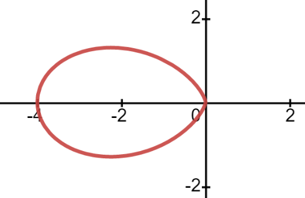
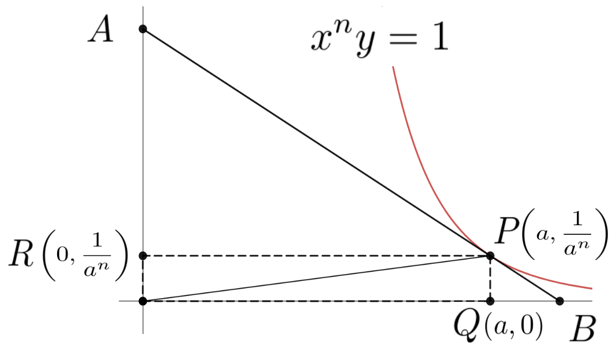
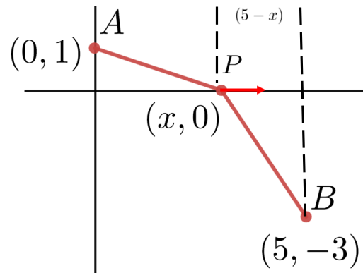
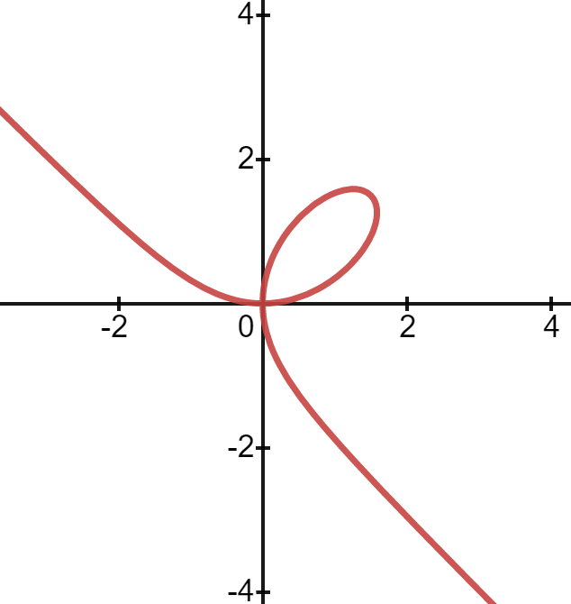
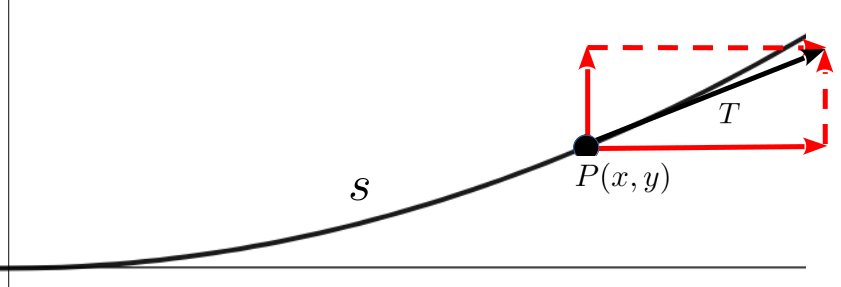

A Vulgar Mechanick can practice what he has been taught or seen or done, but if he is in an error he knows not how to find it out and correct it, and if you put him out of his road, he is at a stand; Whereas he that is able to reason nimbly and judiciously about figure, force and motion, is never at rest till he gets over every rub.
As we observed in Section4.3 Newton, Leibniz, and their contemporaries extended the Principle of Local Linearity to its logical limit. They said if you cut out an infinitely small section of a curve then the section actually is an infinitely short straight line segment. Of course we are quite familiar with infinitely short line segments. We call them differentials.
Leibniz called a triangle whose sides are differentials, like the blue triangle in the figure above, a differential triangle
In the figure \(\dx{y}\) and \(\dx{x}\) are differentials in the vertical and horizontal directions, respectively. But \(\dx{s}\) is a differential at the point \((a, a^2)\) in the direction of the curve or, equivalently, in the direction tangent to the curve. Thus \(\dx{s}\) is a differential along the curve, and simultaneously along the line tangent to the curve
The differentials \(\dx{x}\text{,}\) and \(\dx{y}\text{,}\) dont really tell us much about the graph of \(y=x^2\text{,}\) but the differential ratio, \(\dfdx{y}{x}\text{,}\) does. At each point, \((a, a^2)\text{,}\)\(\dfdx{y}{x}\) gives us the slope of \(\dx{s}\) and the line tangent to the curve at that point. Loosely speaking, the differential ratio \(\dfdx{y}{x}\) gives the slope of the curve at each point.
If we want to find the slope of the curve \(y=x^2\) at the point \((a,a^2)\) we simply find \(\dx{y}\) as usual:\(\dx{y}=2x\dx{x}\text{.}\) Then we take the extra step of dividing through by \(\dx{x}\) to get \(\dfdx{y}{x}=2x\text{.}\) Evaluating this at the point \(x=a\text{,}\)\(y=a^2\text{,}\) and \(\dfdx{y}{x}=2a\) which will give us the slope of the line tangent to the graph of \(y=x^2\) at the point \((a,a^2)\text{.}\)
Drill5.1.
Find an equation of the line tangent to the graph of \(y=x^2\) at each of the following points. Compare these results to those obtained using Fermats Method in Problem3.19
\(\displaystyle (-2,4)\)
\(\displaystyle (-1,1)\)
\(\displaystyle (0,0)\)
\(\displaystyle (1,1)\)
\(\displaystyle (2,4)\)
DIGRESSION: Evaluation Notation.
We will frequently need to evaluate the expression \(\dfdx{y}{x}\) at different points. This can quickly become very confusing unless we have some way of indicating which point is under consideration. To avoid confusion, we use the notation
when there is no ambiguity. This notation is very flexible. Frequently the \(y\) coordinate will not be in play. In that case we write \(\eval{\dfdx{y}{x}}{x}{a}\) to indicate that we are evaluating \(\dfdx{y}{x}\) at the point \(x=a\text{.}\)
END OF DIGRESSION
Example5.2.
For example to compute the slope of the graph of \(y=3x^2-5x\) at \((3,12)\) we use the following three-step process.
(a)
First differentiate \(y=3x^2-5x\) to obtain the differential equation \(\dx{y}=(6x-5)\dx{x}\text{.}\) This relates \(\dx{y}\) and \(\dx{x}\text{.}\)
(b)
Second, from this differential equation we find the ratio \(\dfdx{y}{x}=6x-5.\) This differential ratio tells us the slope of the curve at every point on the curve.
(c)
Third, if we need the value of \(\dfdx{y}{x}\) at a single point like \((3,12)\text{,}\) for example we compute
In this case we could just write: \(\eval{\dfdx{y}{x}}{x}{3}=13\text{,}\) since the \(y\) coordinate never comes into play.
Finally, we emphasize that Leibniz notation is deliberately evocative of the notion of slope because when we evaluate the differential ratio at a point it tells us the slope of the curve at that point. In view of the Principle of Local Linearity, this is equivalent to finding the slope of the line tangent to the curve at that point.
This notation probably seems unnecessarily cumbersome and honestly, in some ways it is. But be assured we have not made this choice lightly. This notation has certain advantages that will become apparent later.
It can be easy to get careless or simply confused and write \(\dfdx{y}{x}\) when you mean \(\eval{\dfdx{y}{x}}{x}{a}\text{,}\) and vice versa, so it is important that you have the distinction between them clear in your mind.
Problem5.3.
(a)
Explain the difference between \(\dfdx{y}{x}\) and \(\eval{\dfdx{y}{x}}{x}{a}\) carefully and clearly.
(b)
We (the authors) have sometimes had students assert that since \(\dfdx{y}{x}=2x\text{,}\) the equation of the line tangent to the graph of \(y=x^2\) at the point \((a, a^2)\) is
Is this the equation of a line? If you arent sure try looking at a special case, say when \(a=3\text{.}\)
(c)
Find the correct formula for line tangent to the graph of \(y=x^2\) at the point \((a, a^2)\text{.}\)
Drill5.4.
Find \(\eval{\dfdx{y}{x}}{(x,y)}{(2,2)}\) if \(y=\sqrt{2x}\) and compare this with the slope we obtained in Problem3.26 using Descartes Method of Normals.
Problem5.5.
Evaluate \(\eval{\dfdx{y}{x}}{x}{a}\) for the following functions at each of the given values of \(x\text{.}\)
There is real temptation at this point to cut corners and compute the differential ratio \(\dfdx{y}{x}\) all in one step. On purely practical grounds, we urge you to differentiate first and then divide by \(\dx{x}\) in two separate steps. Our reasons are two-fold. First, the rules weve learned are differentiation rules. They were designed to compute differentials, not differential ratios. Second, in applications to come we will see that dividing by \(\dx{x}\) will not always move the solution process forward. It can sometimes even get in the way, depending on the problem.
Nonetheless, as you gain more experience and a deeper understanding you will find yourself gravitating toward the differential ratio more and more. This is a normal progression. As we have said before differentials are an intermediate step, a convenient fiction. You dont want to become tied to them for life.
Section5.2Defining the Tangent Line
The word tangent comes from the Latin word tangere (to touch). So youd think it would be easy to define what we mean by tangent line. When asked, most people will come up with something like, The line tangent to a curve is the line that touches the curve at exactly one point.
Does this seem like a reasonable definition to you? Stop and think about it for a few minutes. Were obviously offering a plausible sounding definition that we know wont work. Do you see the problem?
It certainly seems OK, and if we check it with a few simple examples everything looks reasonable. But consider a small segment of the graph of \(y=x^3\) at the point \((1,1)\) and its corresponding tangent line as seen below.
While this certainly seems to fit our notion of a tangent line touching a curve only once, look what happens if we zoom out (see Figure5.6 below). This supposed tangent line will cross (touch) the graph of the curve a second time. In fact, there is only one point on the graph of \(y=x^3\) where the tangent line at that point touches the graph only once. Do you see which point that is? Give this a few minutes thought.
Figure5.6.
In view of what weve just seen, what do you think the definition of a tangent line ought to be?
It is clear that the nature of the touching in Figure5.6 is different at the two points. At \((1,1)\) the blue tangent line grazes the graph of \(y=x^3\) at \((1,1)\) exactly as we would expect. But at the other point it actually cuts through the graph.
The difficulty seems to be that we said touch when we meant graze. How about this definition instead: The line tangent to a curve is the line that grazes the curve at exactly one point.
If it is not possible for a line to graze a curve at more than one point this could be a workable definition. Unfortunately Drill5.7 shows that this is not true.
Drill5.7.
Show that \(y=\frac12x+\frac14\) is the equation of the line tangent to the graph of
at \(x=1, 2, 3, \) and \(x=4\) as seen in the sketch below.
It appears that clearly defining what we mean by tangent line is not as simple as it seemed to be at first. This is frustrating because we all have a pretty clear intuitive idea of what we mean. The difficulty seems to be capturing in words the mental image we all share.
Recall that we have informally stated the Principle of Local Linearity as: Locally any curve is indistinguishable from a straight line.
But which straight line?
The answer to that question is visible in the differential triangle in Figure5.8 below. It is clear that, locally (near a given point \((x,y)\) on the curve) a curve will look like the hypotenuse of the differential triangle \(\dx{s}\) at the point \((x,y)\text{.}\) So we make the following definition.
Figure5.8.Notice that the scale is so small that the graph of the function (the red curve) and its tangent line (the blue hypotenuse) are nearly the same.
Definition5.9.The Line Tangent to a Curve at a Point.
The line tangent to a curve, at the point \((a,b)\) is the line which passes through the point \((a,b)\) with slope \(m=\eval{\dfdx{y}{x}}{(x,y)}{(a,b)}\text{.}\)
Do you see what we did here? Intuitively we know what properties we want a tangent line to have. We want it to touch or graze our curve at a particular point but weve seen that neither of those words quite captures everything we need. And what we need is for the tangent line to pass through the tangent point and have the same slope as the function at that point. So weve removed the words touch and graze in favor of the more precise, quantifiable, language of Calculus.
Since we defined the tangent line to be the extension of \(\dx{s}\) to the finite scale we have essentially defined it to have exactly that property we will need to make Differential Calculus useful. Moreover with this definition in place the Principle of Local Linearity can be formalized a bit more.
Definition5.10.The Principle of Local Linearity.
Sufficiently close to a given point every smooth curve is indistinguishable from the line tangent at that point.
The history of mathematics is riddled with this sort of backward looking definition and we will see it again. In fact Calculus itself is an example of this process. Newton and Leibniz both knew what they wanted their Calculus Differentialus (Leibniz) and Method of Fluxions (Newton) to do. They worked out their computational procedures intuitively just as we started with an intuitive understanding of tangent line. But coming up with precise definitions and a solid logical foundation was harder. It took about \(200\) years for the mathematical community to devise definitions that gave back what intuition had led us to. This is part of why we are not yet overly concerned about our inability to precisely define a differential. When we finally address this issue in Chapter13 we will not be devising any new differentiation techniques. We will be providing logical underpinnings for the techniques our intuition has led us to and that our experience has shown to be useful.
Drill5.11.
Find an equation of the line tangent to the given curve at the indicated values of \(x\text{.}\)
\(y =\frac{2x}{x+1}\)
when \(x =1.\)
\(y=\dfrac{1}{1+x^2}\)
when \(x=-1\)
\(y=x+\sqrt{x}\)
when \(x=1\)
\(y^2=x^3\)
when \(x=1\)
\(y^3=x^2\)
when \(x=1\)
\(y=\dfrac{\sqrt{x}}{x+1}\)
when \(x=4\)
\(y = 3x\)
when \(x=10\)
\(y = -7x\)
when \(x=-100\)
\(y = -\dfrac{x^2}{\pi}\)
when \(x=\sqrt{\pi}\)
\(y=(3x-1)^{-6}\)
when \(x=0\)
\(y = x^3-\dfrac1x\)
when \(x=1\)
\(y=\sqrt{1+x^2}\)
when \(x=2\)
\(y = \dfrac{x}{x-2}\)
when \(x=0\)
\(y = \dfrac{x}{x-2}\)
when \(x=\frac14\)
\(y = \dfrac{1}{1+x^2}\)
when \(x=\frac12\)
\(y = \dfrac{1}{1-x^2}\)
when \(x=1\)
\(y = \dfrac{1}{\sqrt{x}}\)
when \(x=9\)
\(y = \dfrac{1}{\sqrt[3]{x^2}}\)
when \(x=4\)
\(y = \pi x^2\)
when \(x=\dfrac{1}{\sqrt{\pi}}\)
\(y=\sqrt{2x+\sqrt[3]{64-x}}\)
when \(x=0\)
Problem5.12.
Show that the only point on the graph of \(y=x^3\) where the tangent line touches the curve only at the point of tangency is the point \((0, 0)\) and that the line tangent at \((0,0)\) is horizontal. Now graph the curve and the line tangent at \((0,0)\) on the same set of axes. Does this look like a tangent line to you?
Does the graph help you see the significance of Problem5.12? The line tangent to the graph of \(y=x^3\) at the point \((0,0)\) actually crosses the graph at that point. This is weird. And it is exactly counter to our original understanding of what it means for a line to be tangent to a curve.
The next problem will probably strike you as equally weird. But weirdness is acceptable. It is inconsistency that we need to avoid. In both problems the weirdness is a logical consequence of our definition of tangent line. So we will accept Definition5.9 as long as it doesnt lead to inconsistencies.
Problem5.13.
Use Definition5.9 to find the equation of the line tangent to the graph of the straight line \(y=mx+b\) at the point \((a, y(a))\text{,}\) and show that the tangent line is in fact, the original line.
Problem5.14.
(a)
Find the equations of all lines tangent to the graph of \(4x^2+4y^2=25\) that are also parallel to the line \(2x-3y=7\text{.}\)
(b)
Find the equations of all lines tangent to the graph of \(16x^2+9y^2=144\) that are also parallel to the line \(8x+6y=8.\)
(c)
Find the equations of all lines tangent to the graph of \(16x^2-9y^2=144\) that are also parallel to the line \(8x+6y=8.\)
Problem5.15.
Find those points on the graph of the curve \(y=x^3+5\) where the tangent line is
(a)
Parallel to the line: \(12x-y=17\text{.}\)
(b)
Perpendicular to the line: \(x+3y=2\text{.}\)
Problem5.16.
Find an equation of the line(s) tangent to and normal to each of the given curves at the specified points. (You have seen all of these curves previously in Drill4.51)
: \((x^2+y^2)(y^2+x(x+4))=4xy^2\) at \(\left(-1, -1\right)\) and \((-1, 1)\)

Problem5.17.
Find all points where the line tangent to the curve passes through the indicated points. If no such points exist, explain how you know.
(a)
\(y=x^2+2\) through the points
\(\displaystyle (0,0)\)
\(\displaystyle (-5,0)\)
\(\displaystyle (2,6)\)
\(\displaystyle (1,6)\)
(b)
\(y=\frac{x+1}{x-1}\) through the points
\(\displaystyle (0,0)\)
\(\displaystyle (0,-5)\)
\(\displaystyle (5,5)\)
\(\displaystyle (-1,0)\)
(c)
\(y=\frac{x^2-1}{x+2}\) through the points
\(\displaystyle (0,0)\)
\(\displaystyle (0, -1/2)\)
\(\displaystyle (-5,-10)\)
\(\displaystyle (-5,10)\)
DIGRESSION: Dividing by Zero.
Drill5.18.
Show that if \(y^2=x^3-3x+1\text{,}\) whose graph is shown below, then \(\dfdx{y}{x}=\frac{3x^2-3}{2y}\text{.}\)
In Drill5.18 it is tempting to to say that \(\dfdx{y}{x}=\frac{3x^2-3}{2y}\) will give us the slope of the line tangent to the curve at any point \((x,y).\) Typically this would be correct. But not always. For example the line tangent to this curve is horizontal (has slope equal to zero) when
Solving this gives \(x=\pm1\text{.}\) It is plainly visible on the graph below that there is a horizontal tangent line when \(x=-1\text{.}\) But notice that there is no point on the graph where \(x=1\text{!}\) Obviously it is meaningless to ask for the slope of a curve at a point that isnt on the curve.
Even if we didnt have the graph to look at we could still tell that at \(x=1\) there is no tangent line. Setting \(x=1\) and trying to solve for the corresponding \(y\) values we get \(y^2=1-3+1=-1\text{.}\) Since there is no real number that satisfies the equation \(y^2=-1\) we conclude that there is no point on the graph with \(x\)coordinate equal to \(1\text{.}\)
On the other hand, there are three values of \(x\) that correspond to \(y=0\text{.}\) These would be difficult to compute but from the graph we can see that the tangent line is most likely vertical at all three points. Moreover, to compute \(\dfdx{y}{x}=\frac{3x^2-3}{2y}\) at each of these points we would have to divide by \(y=0\text{.}\)
Obviously when we divide a number by zero we get infinity, and just as obviously the slope of a vertical line is also infinity so everything fits. Right?
No, of course not. This is just a very deceptive coincidence.
Many students come into a Calculus with the impression that dividing by zero results in either zero or infinity. It does not. Division by zero is not meaningful.
Mathematicians say that division by zero is an undefined operation or simply that it is undefined. At first it is not at all clear why this is, so lets take look at this question.
What does it mean to divide by any number? To take a very concrete example, what does it mean to divide a length of five units by seventeen? (The units could be inches, picometers, or light-years. We dont care.) It means we want to divide the length into seventeen equally sized pieces, right? But if we want to divided \(5\) units by zero, obviously we cant divide five into zero pieces. So in this very concrete example the phrase five divided by zero is simply and utterly without meaning.
From a slightly more abstract viewpoint we could ask for the length of each piece when we divide a length of five into seventeen pieces. We get \(\frac{5}{17}\) of course. Thats what the fraction notation means
But what number do we get when we divide five into zero pieces. Once again the idea has no meaning.
Taking an even more abstract point of view, observe that multiplication and division are inverse operations (they undo each other). Twelve divided by three is four \(\left(\frac{12}{3}=4\right)\) precisely because when we multiply three times four we get twelve (\(3\times 4 =12\)).
Now dont think of five as a length to be divided, think of it instead as simply a number. So what number can we multiply by zero to get five? Obviously there isnt any such number so this is a meaningless question.
No matter what we try or how we look at it we cannot find any way to make division by zero meaningful.
Since we cant divide by zero we will need to be a bit more careful about how we interpret the symbol \(\dfdx{y}{x}\text{.}\) It will give us the slope of the curve (equivalently, the slope of the tangent line) as long as \(\dfdx{y}{x}\) has meaning. But when \(y\) is zero \(\dfdx{y}{x}=\frac{3x^2-3}{2y}\) is meaningless. Thus it appears that for this particular curve we can draw no conclusions whatsoever from our formula about the tangent line when \(y=0\text{.}\) In this case we say that the differential quotient is undefined. In general, the differential quotient is undefined at any point where evaluating \(\dfdx{y}{x}\) requires a division by zero.
Does this mean we can draw no conclusions at all? Certainly not. In fact those values of \(x\) or \(y\) where \(\dfdx{y}{x}\) is undefined will often turn out to be the most useful. Or at least the most interesting. But we are not yet quite prepared to see how to deal with them properly so we will defer this discussion until a later point.
At the very least this warns us that there are subtleties that must be dealt with when using a powerful tool like Calculus. We will avoid these subtleties for a bit longer, but you need to know that they exist. Dont try to force matters by, for example, blindly dividing by zero as if it is meaningful. We will return to these matters when we have a better understanding of the underlying principles.
END OF DIGRESSION
Problem5.19.
Suppose that the two blue line segments in the figure below are parallel. Show that \(c\) is exactly halfway between \(a\) and \(b\text{.}\) (That is, show that \(c=(a+b)/2\text{.}\))
Problem5.20.Find the Pattern.
Suppose that \(a\) and \(n\) are positive numbers. In the following sketch the line \(AB\) is tangent to the curve \(x^ny=1\) at the point \(\left(a, \frac{1}{a^n}\right)\text{.}\)

(a)
For \(n=1\) first show that the coordinates of points \(A\) and \(B\) are \(\left(0, \frac{2}{a}\right)\) and \((2a, 0)\text{,}\) respectively, and then confirm that:
area\((\triangle AOB)=2\)
area\((\triangle OPQ)=1/2\)
area\((\triangle BPQ)=1/2\)
area\((\triangle PAR)=1/2\)
(b)
For \(n=2\) first show that the coordinates of points \(A\) and \(B\) are \(\left(0, \frac{3}{a^2}\right)\) and \(\left(\frac32a,
0\right)\text{,}\) respectively, and then confirm that:
area\((\triangle AOB)=\frac{9}{4a}\text{.}\)
area\((\triangle OPQ)=\frac{1}{2a}\text{.}\)
area\((\triangle BPQ)=\frac{1}{4a}\text{.}\)
area\((\triangle PAR)=\frac{1}{a}\text{.}\)
(c)
For \(n=3\) first show that the coordinates of points \(A\) and \(B\) are \(\left(0, \frac{4}{a^3}\right)\) and \(\left(\frac43a,
0\right)\text{,}\) respectively and then confirm that:
area\((\triangle AOB)=\frac{8}{3a^2}\text{.}\)
area\((\triangle OPQ)=\frac{1}{2a^2}\text{.}\)
area\((\triangle BPQ)=\frac{1}{6a^2}\text{.}\)
area\((\triangle PAR)=\frac{3}{2a^2}\text{.}\)
(d)
Find a formula for the coordinates of points \(A\) and \(B\) for any value of \(n\) and then:
Find the the area of \(\triangle AOB\) for any value of \(n\text{.}\)
Find the the area of \(\triangle OPQ\) for any value of \(n\text{.}\)
Find the the area of \(\triangle BPQ\) for any value of \(n\text{.}\)
Find the the area of \(\triangle PAR\) for any value of \(n\text{.}\)
Problem5.21.
Consider the equation \(y=x\sqrt[3]{x-8}\text{.}\)
(a)
Find the equation of the line tangent to the graph of when \(x=0\text{.}\)
(b)
Does a line tangent to the graph of this function exist at \(x=8\text{?}\) If so, find the equation of the line. If not, explain why not.
Hint.
Have you looked at the graph yet?
These last three problems illustrate that while many otherwise difficult computations can be done in these lines, as if by magic (to quote Leibniz) there are still a great many subtleties to be accounted for. There is still plenty of room for creative, analytical problem solving.
We will come back to some of these subtleties later. For now keep in mind that while Calculus is a very powerful tool it does not allow us to solve all problems blindly, by simply moving the pebbles.
Section5.3The Vomit Comet
To acclimate astronaut trainees to the effects of weightlessness, NASA has an airplane perform a series of steep climbs and sharp dives. At the top of each climb passengers will experience weightlessness for about \(25\) seconds. During a training flight the pilot will repeat this maneuver about \(40\) times.
Because this roller coaster ride sometimes causes nausea for the passengers the planes used for the maneuver have been christened Vomit Comets. One of these airplanes was used to film the weightless scenes in the \(1995\) film Apollo 1312
https://www.imdb.com/title/tt0112384/
.
It is well known that the path of an object moving only under the influence of the Earths gravity at the surface of the earth is parabolic. To simulate weightlessness inside the plane the Vomit Comet is flown so that its flight path matches such a parabolic flight. That is, its shape will be the graph of a curve having the form
\begin{equation*}
y=Ax^2+Bx+C.
\end{equation*}
Wed like to find the values of the unknown parameters \(A\text{,}\)\(B\text{,}\) and \(C\) that match the path of an object moving under the influence of Earths gravity. Once these are known we will also be able to determine the peak altitude of the flight and how far (horizontally) it will go before coming back to the altitude where the maneuver began. That is, we can find the point where the pilot should enter, and later exit, the parabolic flight. Finally wed like to confirm the claim that this maneuver takes about \(25\) seconds.
Unfortunately we dont yet have enough information to determine \(A\text{,}\) but we can find \(B\) and \(C\text{.}\)
Problem5.22.
Suppose the following graph depicts the parabolic flight path followed by the Vomit Comet as it starts its maneuver at an altitude of \(7000\) meters and an initial angle of elevation of \(45^\circ\text{.}\)
If the equation of this parabola is \(y=Ax^2+Bx+C,\) then determine the values of \(B\) and \(C\text{.}\)
To find \(A\text{,}\) well need to have a better model of the motion. Fortunately, Calculus is exactly the right tool for building such a model but we dont yet have all of the pieces we need. We will return to the Vomit Comet problem once we have them.
The pilot of a Vomit Comet seeks to simulate weightlessness, but the pilot of a commercial airliner works hard to avoid subjecting its passengers to extreme effects like weightlessness or, at the other end, of extreme gravity. So an airliner must descend more gradually. This situation is a little easier to understand so we will explore it in the next couple of problems and examples before returning to the Vomit Comet.
Example5.23.Modeling the flight path of an airliner.
We want to model the flight path of a plane as it lands and determine the distance from the runway the plane should be when it starts its descent.
A fundamental tenet of mathematically modeling real world phenomena is to keep things as simple as possible. So, the first thing wed be likely to try for is a parabolic descent path:
\begin{equation*}
y=Ax^2+Bx+C.
\end{equation*}
But it is pretty clear that this wont work because the plane should be traveling horizontally at the beginning and at the end of its descent. At the end, because at that point it should be on the ground, and at the beginning because we dont want to terrify the passengers.
Problem5.24.
Show that there is only one point on any parabola where the line tangent to the curve is horizontal. Explain why this proves that the flight path of the airliner in Example5.23 cannot be parabolic.
Hint.
Wherever the flight path is horizontal its slope will be zero.
The next simplest curve we could use would be a cubic polynomial
Below is a section of a cubic polynomial depicting a flight path with the plane starting initially at the point \(P(l,h)\) and ending at the airport \(Q\) which we will arbitrarily designate as the origin.
(a)
Assuming that the flight path is the graph of equation(5.2), compute \(\dx{y}\text{.}\) Then divide by \(\dx{x}\) to obtain \(\dfdx{y}{x}\text{.}\)
The flight path is horizontal at \((0,0)\text{.}\)
(d)
Determine the values of \(A\) and \(B\) in equation(5.2) in terms of \(l\) and \(h\text{.}\)
Hint.
The point \(P\) is on the flight path and the flight path is horizontal at \(P\text{.}\)
Weve taken our analysis of the flight paths of both the Vomit Comet and our airliner as far as we can using slopes alone. The problem is that a flight path is like a road. A road doesnt go anywhere. It just sits there. But an object traveling along a road (or a flight path) is moving. It has a velocity and an acceleration.
Analyzing a static path does not allow us to model either the velocity or the acceleration of an object moving along that path. Fortunately for us, Newtons dynamic view of Calculus is just the tool we need to attack these problems. We will return to them in Section5.7.
Since the Vomit Comet aims to replicate the path of a body falling freely under the influence of gravity we will also need to understand the influence of gravity on the motion of bodies. We address this in the next section.
In the previous section we asserted with no justification whatsoever that the flight path of the Vomit Comet would be parabolic. Then, in Problem5.22, we gave you the task of finding the constants \(B\text{,}\) and \(C\) for which the graph of the curve
\begin{equation*}
y=Ax^2+Bx+C
\end{equation*}
is the flight path of the Vomit Comet with an initial angle of elevation of \(45^\circ\text{.}\) You should have obtained
\begin{equation*}
y=Ax^2+x+7000.
\end{equation*}
Inside the airplane, we want what is called neutral buoyancy. This means that we dont want any forces pushing us up or down, side to side, or back and forth relative to the airplane
The way to assure this is to force the airplane to fly along the same path it would take if it were unpowered and falling freely. At first it might seem like all we have to do is shut down the engine, but that wont work because air resistance will prevent the plane from falling freely. The engines must be engaged to force the plane along the path it would follow naturally if there were no atmosphere and thus, no resistive forces. Also, it is incredibly dangerous to turn off the engines of an airplane while it is flying. In this section well see why this path must be in the shape of a parabola.
Newton very famously said, If I have been able to see further, it is by standing on the shoulders of giants, and, in his \(1684\) paper on Calculus, Leibniz remarked that Other very learned men have sought in many devious ways what someone versed in this calculus can accomplish in these lines as by magic.
As weve seen Fermat, Descartes, and Roberval were three of the learned giants Newton and Leibniz were indebted to. Another was Professor Galilei of the University of Pisa, who is universally known and referred to by his first name, Galileo14
. As a professor of mathematics at Pisa, Galileo studied, among other things, how objects moved under the influence of gravity.
We will be following Galileos lead to address such questions as:
Suppose you throw a ball straight up into the air. How high will the ball go?
How long will it take for it to hit the ground and what will its velocity be at impact?
If you throw the ball up twice as fast. Will it go twice as high?
Since Galileo had neither the technology nor the mathematics to account for air resistance he ignored it. For the moment we will ignore it too.
Problem5.27.
We all know from experience that if you throw a ball straight up in the air, it will reach some maximum height. But suppose you throw the ball up twice as fast, would it go twice as high?
The accepted theory of motion in Galileos time was Aristotles15
https://en.wikipedia.org/wiki/Aristotle
assertion that a heavier object would fall faster than a lighter object. Our common experience is that a hammer falls faster than a feather so this was an entirely reasonable thing to believe at the time. But we now know that this is because the resistance of the air slows the feather more than it does the hammer.
In \(1971\text{,}\) Apollo Astronaut David Scott confirmed this experimentally (see the video below) by dropping both a hammer and a feather on the surface of the moon. Because there is no air on the surface of the moon there is no air resistance, so the hammer and feather hit the surface of the moon at the same time.
Figure5.28.David Scott dropping a hammer and a feather on the surface of the Moon
Since he didnt have access to the moon Galileo had to be clever instead. But Galileo was one of the group of new scientists who gathered experimental data and applied mathematical principles to theories. As a result of his experimental investigations Galileo proposed that in the absence of air all objects would fall at the same rate
How did he surmise that all objects would fall at the same rate?
Well actually, he didnt. We need to be very careful in our use of language here. To say that all objects fall at the same rate is a bit sloppy. Since velocity is the rate of change of position it seems to say that all objects fall at the same velocity.
But we know thats not true because the velocity of a falling object depends on how long it has been falling. At the moment you drop a ball its velocity is zero. Thereafter it gains velocity it accelerates. Thus an object that has just been dropped is moving slowly while an object that has been falling for a while is moving at a faster rate.
What Galileo actually proposed was that the rate of change of the velocity the acceleration of all falling bodies is constant. But an object falling freely under the influence of Earths gravity gets moving pretty quickly and in Galileos day the tools available for measurement were very limited. So he slowed things down by letting small balls roll down a ramp as shown below.
Figure5.29.
Galileo assumed (correctly) that friction with the ramp would not significantly influence his measurements. When he did this he noticed that the balls always seemed to accelerate at a constant rate which depended only on the steepness of the ramp. More precisely, the acceleration of the rolling ball varied with the angle of descent. In modern terms we would say that the acceleration is a function of the angle of descent.
Referring to Figure5.29, it is clear that when \(\theta=\pi/2\) the ball wont move at all. So its acceleration is zero. When \(\theta=0\) the ball accelerates downward freely under the influence of gravity with no resistance Galileo measured the acceleration associated with steeper and steeper ramps (that is for \(\theta\) closer and closer to zero) obtaining a table of values similar to Table5.30.
Table5.30.Acceleration on an Incline
\(\theta\)
Acceleration
\(\pi/3 \approx1.05\)
4.9
\(\pi/4 \approx0.79\)
6.93
\(\pi/6 \approx0.52\)
8.49
\(\pi/12 \approx0.26\)
9.47
\(\pi/24 \approx0.13\)
9.72
\(\pi/48 \approx0.07\)
9.78
\(\pi/100\approx0.03\)
9.795
\(\pi/200\approx0.02\)
9.799
\(\pi/300\approx0.01\)
9.799
Notice that we are using radians to measure the angle. If you are unsure what a radian is you can refer to our brief review of Trigonometry in Section6.1.
For scientific computations radian measure is usually simplest, so we will use it fairly consistently throughout this text. But degree measure is also common so it will occasionally make an appearance, like it did in Problem5.22.
From the table it is clear that as \(\theta\) gets closer and closer to zero the acceleration is getting closer and closer to \(9.8.\) Thus Galileo deduced that when there is no ramp (when \(\theta =0\)) the velocity will increase each second by \(9.8\frac{\text{meters}}{\text{second}}.\)
That is, the velocity of an object falling under the influence of the earths gravity increases by \(9.8\) meters per second, each second. This is usually abbreviated as \(9.8\frac{\text{meters}}{\text{second}^2}\text{,}\) is commonly denoted by \(g\text{,}\) and is called the constant of acceleration due to gravity
Problem5.31.
With a little Trigonometry you can deduce that \(g=9.8\frac{\text{meters}}{\text{second}^2}\) with only one measurement. Use the diagram and the first line of the table above to deduce that \(g=9.8.\)
Hint.
\(\cos\left(\pi/3\right)=1/2\text{.}\)
If we drop the object from some height, then its initial velocity is zero. After one second it will be falling at a rate of \(9.8\frac{\text{meters}}{\text{second}}\text{,}\) after two seconds, its velocity will be \(9.8\times2=19.6\frac{\text{meters}}{\text{second}}\text{,}\) etc. That is, as an object falls, its velocity increases at the constant rate of \(9.8 \frac{\text{meters}}{\text{second}}\) every second: \(v=9.8t.\)
The specific number that Galileo found, \(9.8\frac{\text{meters}}{\text{second}^2}\text{,}\) is an artifact of the units we use to measure distance (meters) and time (seconds) and the fact that we are on the surface of a particular planet. If we measure distance in feet instead then at the surface of the earth a falling object will accelerate at \(32 \frac{\text{feet}}{\text{second}^2}\text{.}\) If we go to the surface of the moon, it will accelerate at \(1.6
\frac{\text{meters}}{\text{second}^2}\text{.}\)
Problem5.32.
Show that if we measure distance in feet, the acceleration constant on the moon is approximately \(5.2\frac{\text{feet}}{\text{second}^2}.\)
The general situation is this: If a falling objects velocity, in meters per second \(\left(\frac{\text{meters}}{\text{second}}\right)\text{,}\) is changing at a constant rate of \(r\) meters per second per second \(\left(\frac{\text{meters}}{\text{second}^2}\right)\text{,}\) and \(t\) is the number of elapsed seconds then \(v=rt\text{.}\) From Galileos work we know that at the surface of the Earth \(r=g=9.8\) so
\begin{equation}
v=9.8t\tag{5.3}
\end{equation}
We can check that this is reasonable by looking at the units of measurement. Since the acceleration \(r,\) is measured in \(\frac{\text{meters}}{\text{seconds}^2}\) and time is measured in seconds, when they are multiplied a symbolic cancellation gives
or meters per second; the units used to measure velocity. Notice that equation(5.3) is independent of the weight (or mass) of the falling object. Thus Galileo hypothesized that under the influence of gravity alone all objects accelerate downward at the same rate. Galileos hypothesis which contradicts Aristotles claim came from both his experimental evidence and a famous thought experiment he described in his book On Motion (1590).
The experiment runs as follows: Imagine that two objects, one light and one heavy, are connected to each other by a string and we drop them from a great height, say the top of the Tower of Pisa. If we assume heavier objects do indeed fall faster than lighter ones the string will soon pull taut as the lighter object retards the fall of the heavier object.
So, the system taken as a whole will fall more slowly than the heavier object alone.
But the system as a whole is heavier than either individual object. So according to Aristotle, the system taken as a whole should fall faster than the heavier object.
This contradiction leads inexorably to the conclusion that our initial assumption Aristotles assertion that heavier objects accelerate faster must be false.
According to legend Galileo tested his hypothesis by dropping balls of different weights from the top of the Tower of Pisa, but that is almost certainly pure legend. He never actually did this. Probably.
(Discourses and Mathematical Demonstrations Concerning Two New Sciences) (1638). This was the last of Galileos many scientific works
The two sciences referred to in the title were the science of motion, which became the foundation of modern physics, and the science of materials and construction, an important contribution to engineering.
Suppose an object falls \(56\) meters from the top of the Tower of Pisa to the ground. Can we determine how fast it is moving when it strikes the ground?
Recall that the formula \(v=gt\) tells us the balls velocity at any time \(t\text{.}\) So if \(t_g\) is the amount of time it takes for the ball to reach the ground then the velocity at the end would be \(v=gt_g\text{.}\) But how do we find out exactly when the ball strikes the ground?
To see the difficulty, suppose we dropped the ball from a height of \(9.8\) meters. Would it take \(1\) second for the ball to hit the ground?
Clearly not.
To reach the ground after \(1\) second the ball would have to average \(9.8\frac{\text{meters}}{\text{second}}\) during the entirety of that first second. But at first it is not moving at all \((\text{velocity} =0)\text{.}\) After one second its velocity has increased to \(9.8 \frac{\text{meters}}{\text{second}}\text{.}\) So for the entire duration of that first second the balls velocity is less than \(9.8
\frac{\text{meters}}{\text{second}}\text{.}\) Thus after \(1\) second it has not yet hit the ground because it was never going fast enough to do so. But exactly how far it has fallen still isnt clear.
Reasoning similarly, at the beginning of the next second the ball is already falling at \(9.8\frac{\text{meters}}{\text{second}}\) and thereafter its velocity increases, so it falls at least \(9.8\) meters during the next second, in addition to the distance it fell during the first. So, while we cannot yet tell exactly how far it falls during either second, we can say that,
it will not hit the ground during the first second, and
it definitely will hit the ground sometime during the next second.
If we had an expression for the balls position, \(p\text{,}\) similar to equation(5.3), we would be in much better shape. Galileo was able to do this the tools of Calculus. Since learning to use those tools is our purpose we will take the easier route of Calculus.
Section5.5Bringing in Calculus
Let \(p(t)\) represent the position at time \(t\) of a ball under the influence of gravity. That is, \(p(t)\) tells us how far the ball has moved from its starting position, \(p(0)\text{,}\) after \(t\) seconds. Our goal is to use Galileos discovery that \(g=9.8\frac{\text{meters}}{\text{second}^2}\) to find a formula for \(p(t)\text{.}\)
During an (infinitesimal) instant of time \(\dx{t}\text{,}\) the velocity is virtually constant so during that instant of time, \(\dx{t}\text{,}\) the infinitesimal change in position, \(\dx{p}\) is given by
\begin{equation*}
\dx{p}=\text{velocity }\times\text{ change in time} =v\dx{t}.
\end{equation*}
But from equation(5.3) we also know that \(v=9.8t\text{,}\) so \(\dx{p}=9.8t\dx{t}\text{.}\)
Thus finding the position of the ball at any time reduces to finding an expression for \(p(t)\) that satisfies the differential equation
Since we dont (yet) have a procedure for solving differential equations like equation(5.4) we will make an educated guess, and then confirm that our guess works.
From the Power Rule the differential of a quadratic expression like \(k t^2\) will be the linear term \(2k
t\dx{t}\text{,}\) so \(p(t)=k t^2\) seems like a reasonable guess.
(a)
Show that \(p(t)=kt^2\) satisfies equation(5.4) when
Earlier we reasoned that a ball dropped from a height of \(9.8\) meters would strike the ground between one and two seconds after being dropped. Use \(p(t)\) to find out exactly how long it takes.
(c)
How long would it take the ball to hit the ground if dropped from the top of the Tower of Pisa (a height of \(56\) meters?
(d)
Evaluate \(\eval{\dfdx{p}{t}}{p}{56}\text{.}\) What does this represent physically?
Hint.
Remember that \(\dx{p}\) is a change in position and \(\dx{t}\) is a change in time.
To summarize the results of Problem5.33 we see that if \(p = p(t)=\frac{g}{2}t^2\) denotes the position of a dropped ball at time \(t\text{,}\) the following statements are true.
The velocity of the ball is given by \(v =\dfdx{p}{t}(=gt)\text{.}\)
The rate of change of the velocity (acceleration) is then.
Notice that in our diagram we also introduced the variable \(h\) which represents the height of the ball from the ground. The way we choose to define our variables can have a considerable impact on the way we understand a given problem. Here for example both \(p\) and \(h\) give us the position of the ball but if \(p(t)=4.9t^2\text{,}\) then \(p=0\) represents the top of the tower and the positive direction is down. Conversely, if \(h(t)=56-4.9t^2\text{,}\) then \(h=0\) represents ground level and the positive direction is up.
Our examination of Galileos work affords us the opportunity to broaden our understanding of the meaning and use of differentials and differential notation. In Problem5.33 we used \(p(t)\) to represent the distance that the ball has fallen at time \(t\text{.}\) In that case it turned out that \(\dfdx{p}{t}\) represents the velocity with which the ball is falling at time \(t\text{.}\) This is at once mundane and profound.
It is mundane because velocity has always been defined as distance (\(\dx{p}\)) divided by elapsed time (\(\dx{t}\)), and this remains true even when the distance and the time are infinitesimals.
It is profound because the (instantaneous) velocity \(v(t)\text{,}\) of the ball is always some finite quantity, but we compute it using the quotient of two differentials, \(\dx{p}\) an \(\dx{t}\) in this case.
A differential ratio, for example \(\dfdx{p}{t}
\text{,}\) is a fundamental concept. In general if some quantity, say \(y\) is changing in time then \(\dfdx{y}{t}\) represents the (instantaneous) rate of change of \(y\text{.}\)
In Problem5.33 we saw that the velocity of the falling ball is also changing in time, just like its position. Thus we can turn around and compute the instantaneous change in velocity (the acceleration) by computing the differential of the velocity \(\dx{\left(\dfdx{p}{t}\right)}\text{,}\) and dividing by \(\dx{t}\text{,}\) giving \(\dfdx{\left(\dfdx{p}{t}\right)}{t}\text{.}\) This very awkward notation is often abbreviated as \(\dfdxn{p}{t}{2}\text{.}\) Notice that the acceleration is the result of the following set of computational steps:
Differentiate \(p\text{.}\)
Divide by \(\dx{t}\text{.}\)
Differentiate \(\dfdx{p}{t}\text{.}\)
Divide by \(\dx{t}\) again.
As you become more fluent with these computations you will inevitably begin to combine these steps. Your teacher probably already does. However, the computation of a differential ratio always involves finding the differential of some finite quantity and then dividing by another differential. If your instructor computes a differential ratio and you dont see how it was done, ask them to show you each differentiation and division.
If we read the abbreviated notation \(\dfdxn{p}{t}{2}\) literally it seems to suggest that \(\dx^2p=\dx(\dx{p})\) is meaningful but the notion of taking the differential of a differential is fraught with logical difficulties. We will begin to address these in Section6.8. For now we can avoid pitfalls by recognizing that expressions like \(\dfdxn{y}{x}{n}\) or \(\dfdxn{x}{t}{n}\) are the result of differentiating some fininte quantity (\(y\text{,}\)\(x\text{,}\)\(\dfdx{y}{x}\text{,}\) whatever) and dividing by the differential of the variable (\(\dx{x}\text{,}\)\(\dx{t}\) whatever) \(n\) times. We will explore this bit further in the next section.
Problem5.34.
Consider a ball moving vertically so that its height at time \(t\) seconds is given by
Show that the initial height is \(h_0\text{,}\) the initial velocity is \(v_0\text{,}\) and the acceleration is \(=-9.8\text{.}\)
For simplicity, assume \(h_0=0\text{.}\) How high will the ball go?
Suppose we double our initial velocity. Would the ball go twice as high? Compare this to your guess in Problem5.27.
Since the graph of \(h(t)=h_0+v_0t-4.9t^2\) is a parabola it is tempting to conclude that we have shown that an object falling under the influence of gravity alone must be a parabola. But this not correct. We have consistently assumed that the ball is falling vertically so its flight path is a straight vertical line, not a parabola. The graph of \(h(t)\) is not the flight path of the ball.
We have seen how differentials and the rules for computing them can be useful in applications involving slopes, velocities, and accelerations. The fact that they are infinitely small and difficult to rigorously define does not diminish their value as a problem-solving tool. Eventually, we will return to these foundational issues in Chapter13.
As subtle as the concept of infinitely small changes such as \(\dx{x}\text{,}\)\(\dx{y}\text{,}\) or\(\dx{t}\) can be, we have seen how their ratios \(\dfdx{y}{x}\text{,}\)\(\dfdx{x}{t} \text{,}\) or \(\dfdxn{y}{x}{2} = \frac{\dx \left( \dfdx{y}{t} \right)
}{\dx{t}}\) can represent actual finite physical quantities. For later mathematicians, these ratios became the focal point for the understanding of calculus.
Because of concerns regarding the validity of differentials, mathematicians in the \(18\)th and \(19\)th centuries, had a strong motivation to skip over the differential concept and jump immediately to the more useful, and finite, differential ratio.
attempted to make Calculus more rigorous. He even coined a new term for the differential ratio. He called it the fonction drive (meaning a function derived from another function). He also replaced the differential ratio \(\dfdx{y}{x}\) with the more modern function notation \(y^\prime(x)\) (read this aloud as \(y\) prime of \(x\)).
Lagranges attempt to make Calculus rigorous was very clever, but ultimately unsuccessful. Full rigor had to wait for another hundred years, so we will not say much about Lagranges efforts here. But we will adopt his terminology and his notation.
DIGRESSION: Function Notation, and Prime Notation.
Suppose that \(y=x^3\text{.}\) It is clear that \(y\) depends on \(x\text{,}\) so we denote this functional dependence with the notation
\begin{equation*}
y(x)=x^3.
\end{equation*}
Lagrange called the differential ratio \(\dfdx{y}{x}\text{,}\) a derived function. The derived part seems clear enough. After all, if \(y=x^3\) them \(\dfdx{y}{x}\) is obtained (derived) from \(y\) as follows:
and called \(y^\prime(x)\) the fonction drive of \(y(x)\text{.}\) In English the phrase fonction drive has been shortened to the derivative.
In some contexts Lagranges prime notation has several advantages over the differential notation weve been using. Over time it has become the most common notation for the derivative in mathematics. But the fact that it took over \(100\) years to develop suggests that something more than mere notation is in play here.
Using multiple equivalent notations can be very confusing for beginners. Since our current task is simply to master the differentiation rules we will stick to Leibnizs differential notation as much as possible. But there will come a time when Lagranges prime notation will be much more convenient. At that point we will casually use the two expressions \(\dfdx{y}{x}\) and \(y^\prime(x)\) interchangeably and we will think of them both as a function derived from the function \(y(x)\text{.}\)
When we do this the differential notation were currently emphasizing will take on two distinct personalities. On the one hand \(\dfdx{y}{x}\) represents a ratio of the differentials \(\dx{y}\text{,}\) and \(\dx{x}\) which are distinct infinitesimal quantities. On the other hand \(\dfdx{y}{x}\) is the name of a function -- it is all one symbol. When we are thinking of \(\dfdx{y}{x}\) as the derivative function we cannot detach the pieces of \(\dfdx{y}{x}\) any more than can delete the letter n from \(\sin(x)\) because \(\text{si}(x)\) has no meaning.
Eventually the differentials weve been using so casually will become a guilty secret. Given \(y=y(x)\) well use them as a helpful aid while we compute. But as soon as we have \(\dfdx{y}{x}\) in hand we will view it as a single, complete symbol representing the (finite) derivative function. Often we will simply replace it with \(y^\prime(x)\) as if we are ashamed of having used differentials at all.
This more advanced viewpoint will become commonplace later, but to give you a preview, consider the following problem.
Problem5.36.
Recall that in Descartes Method of Normals, we had to find a double root of a polynomial. To deal with this problem, Johann van Waveren Hudde21
(16281704) developed an algebraic tool for determining such double roots. Calculus allows a development of Huddes Rule that does not require the complex algebraic reasoning that Hudde used and is much easier to follow.
Consider any polynomial \(p(x)=a_0+a_1 x+\cdots+a_n x^n\text{.}\) Let \(a\) and \(b\) be any real numbers and form the following Hudde Polynomial.
Hudde showed that if \(r\) is a double root of \(p(x)\text{,}\) then \(r\) is a root of the Hudde polynomial \(H(x).\)
(a)
Show that if \(r\) is a double root of the polynomial \(p(x)\) then it is a root of \(p^\prime(x)=\dfdx{p}{x}\text{.}\)
Hint.
If \(r\) is a double root of \(p(x)\text{,}\) then \(p(x) = (x-r)^2q(x)\) for some polynomial \(q(x)\text{.}\)
(b)
Show that \(H(x) = ap(x)+bxp^\prime(x)\) and use this to prove Huddes Rule.
END OF DIGRESSION
The bottom line is that we will adopt the name derivative to indicate the result of dividing one differential by another. So the expression \(\dfdx{y}{x}\) is the derivative of \(y\) with respect to \(x\text{.}\) Although \(y^\prime(x) \) is simpler to write and to read the sheer simplicity of the notation can be a problem for beginners so we will only use it when the prime notation actually clarifies our meaning. The first place this occurs is in Section7.2.
When computing a derivative you will eventually become sufficiently proficient that you will jump directly to the derivatives. But for now you should go through the two-step process of differentiating to obtain a differential and then dividing by another differential to obtain a derivative because the computational rules youve learned are differentiation rules, not derivative rules. If you do this, you will avoid some difficulties created by trying compute too much too soon. This can be illustrated in the following example, where we purposely use prime notation to highlight the difficulties involved in the computation.
Example5.37.
Given \(y(x)=(1+x^2)^\frac12\) we wish to compute \(y^\prime(x)\text{.}\) Setting \(z=1+x^2\) we see that
This would seem to be correct but it is not. Do you see the problem?
The left side of equation(5.5) indicates that the variable is \(x\) but there is no \(x\) on the right side, only \(z\text{.}\) So this cant be right. But what went wrong? We can avoid problems like this by using differentials:
The glaring question here is why is \(\dx(\dx{x})\) equal to zero in equation(5.6) but \(\dx(\dx{y})\) is not equal to zero in equation(5.7)? Or, at a more fundamental level, what do we mean by the infinitely small change of an infinitely small change? As we will see in Chapter13 the early critics of Calculus cited this question specifically to argue that Calculus was invalid.
We will address these issues beginning in Chapter13. For now we will make the following compromise: We will only differentiate finite quantities, be they functions, or derivatives. Since our ultimate goal is to compute some derivative this will suit our needs without getting caught up in the very problematic question of the nature of higher order differentials. So for this example we have
Youve probably been taught all of your life to simplify complex looking expressions like \((-1)(-2)(-3)(-4)\) and you probably do it without thinking. So you may be wondering why we left the coefficients above in the form we did.
The reason is simple. We were looking for patterns not numbers. Writing the above formulas as \(\dfdxn{y}{x}{2} = 2x^{-3},\)\(\dfdxn{y}{x}{3} = -6x^{-4}\text{,}\) and \(\dfdxn{y}{x}{4} =
24x^{-5}\) obscures the pattern. Keep this in mind as you proceed. Algebraic or arithmetical simplifications often get in the way of recognizing patterns. Dont do them until there is a compelling reason to.
Problem5.41.Find the Pattern.
Find the pattern in Example5.40. Use this pattern to find \(\dfdxn{y}{x}{50}\) directly, without computing all fifty derivatives.
Example5.42.
Consider the circle \(x^2+y^2=1\text{.}\) Differentiating, we have \(2x\dx{x}+2y\dx{y}=0\text{,}\) or \(\dfdx{y}{x}=-\frac{x}{y}\text{.}\) Differentiating again we have
Continue this example to show that \(\dfdxn{y}{x}{2}=-\frac{1}{y^3}\text{.}\)
(b)
Show that \(y=\pm\sqrt{1-x^2}\) and use this to compute \(\dfdxn{y}{x}{2}\text{.}\)
(c)
Do you get the same answer? Which method do you prefer?
Problem5.44.
For each of the following find \(\dfdxn{y}{x}{2}\) in terms of \(x\) and \(y\text{.}\)
(a)
\(y=3x^4-x^3+2x-7\)
(b)
\(x=y^2\)
(c)
\(y=\sqrt{x}\) Compare this with part (b).
(d)
\(xy=1\) Compare this with Example5.40. Which method do you prefer?
(e)
\(\frac{x^2+y}{3x+y^2}=x-y\)
Problem5.45.
We know that it is not generally true that \(a^b=a\cdot b\) even though there are certain exceptions, like \(a=b=1\text{,}\)\(a=4\) and \(b=1/2\text{,}\) or \(a=b=2\text{.}\) In the same way, even though the Product Rule makes it very clear that
there are certain pairs of functions which are exceptions; for which (5.8)is true. For example, show that for each of the following it is true that \(\dfdx{(y\cdot z)}{x}= \dfdx{y}{x}\cdot\dfdx{z}{x}\text{.}\)
(a)
\(y=x\)
\(\displaystyle z=\frac{1}{1-x}\)
\(y=x^2\)
\(\displaystyle z=\frac{1}{(2-x)^{2}}\)
\(y=x^3\)
\(z=(3-x)^{-3}\)
(b)
Find the general pattern in part (a).
(c)
Those pairs of functions which fit the pattern you found in part (b) are not the only exceptional pairs. Can you find others?
Adopting Lagranges terminology, but not his notation, we see that if the position of a point moving in a straight line (like the \(x\) axis) is given by \(x=x(t)\text{,}\) then the first derivative, \(\dfdx{x}{t}\text{,}\) will give its velocity, and its second derivative, \(\dfdxn{x}{t}{2}\text{,}\) will give its acceleration.
Drill5.46.
Each of the following represents the position of a point on the \(x\)-axis at time \(t\text{.}\) Find the velocity and acceleration.
For each of the following \(x(t)\) represents the position of a point moving along the \(x\)-axis. Use the information given to determine if the point is slowing down or speeding up at the instant \(t_0\text{.}\)
If \(s(t)\) represents the position of an object moving in a straight line we have seen that its velocity is given by \(\dfdx{s}{t}\text{.}\) When the object is falling vertically we will use \(y(t)\) to represent its vertical position, so that \(\dfdx{y}{t}\) is its vertical velocity. Similarly if it is moving horizontally we will use \(x(t)\) and \(\dfdx{x}{t}\text{.}\)
Recall that in Problem3.38 we imagined releasing an object from a helicopter which is flying horizontally horizontally with a speed of \(\dfdx{x}{t}=1\frac{\text{meter}}{\text{second}}\text{.}\) From Galileos work we now know that its vertical velocity will be \(\dfdx{y}{t}=9.8 t\, \frac{\text{meters}}{\text{second}}\text{.}\)
After its release the ball will fall neither horizontally, nor vertically. It wont even fall along a straight line. If we ignore air resistance then the combination of the balls horizontal velocity (inherited from the helicopter) and its vertical velocity (due to the force of gravity) will cause the flight path to curve into an arc similar to that shown below. In our sketch the value of \(s(t)\) is the distance the ball has traveled along its flight path.
Problem5.48.
Since \(\dfdx{x}{t}=1\) we have \(x=t\text{.}\) Since \(\dfdx{y}{t}=-9.8t\) and we know that \(y=-4.9t^2.\) Use this to find a formula for \(y=y(x)\) and confirm that the arc is a parabola.
As the ball falls there are three distinct quantities we are interested in: the horizontal velocity of the ball, \(\dfdx{x}{t}\text{,}\) the vertical velocity of the ball, \(\dfdx{y}{t}\text{,}\) and its speed in the direction of travel, \(\abs{\dfdx{s}{t} }\text{.}\)
But what is not as clear is why the length of the diagonal (tangent) arrow in the sketch above should represent the (instantaneous) speed of the object. To see this, it will be helpful to look at a differential triangle and observe what is going on at an infinitely small scale.
From the Principle of Local Linearity (Definition5.10), we know that during an infinitely small time change \(dt\text{,}\) the change in distance traveled, \(\dx{s}\text{,}\) along the curve is the same as the change along the tangent line. Even though the differential triangle above is infinitely small, we can still apply the Pythagorean theorem to get
Suppose \((x,y)\) are the coordinates of a ball moving along the given curves. If the ball is moving with a constant horizontal velocity of \(\dfdx{x}{t}=2\frac{\text{ units}}{\text{second}}\) for each curve find the following.
The vertical velocity of the ball at the points indicated.
The horizontal and vertical acceleration of the ball at the points indicated.
The speed in the direction of travel of the ball at the points indicated.
(a)
\(y=x^2,\) at \((-1,1)\) and \((1,1)\)
(b)
\(y=x^3,\) at \((-1,-1)\) and \((1,1)\)
(c)
\(x^2-y^2=3^2\) at \((-5,4)\) and \((-5,-4)\)
Recall that we stopped analyzing in Problem5.25 because we needed to be able to account for both the velocity and the acceleration of the craft. We now have everything we need to finish the analysis of the flight path of the commercial airliner which we started in Example5.23.
Problem5.50.
Recall that in Problem5.25 we asked you find the equation of this flight path from the data in the figure at the right. You should have found that
As we said when we suspended our earlier efforts, the problem with this picture is that it is static. It is a picture of the path the airliner has flown after the flight is finished. We now have the tools we need to address the characteristics of the flight as it occurs.
(a)
Use the differential triangle in our figure to show that airspeed of the airplane in its direction of motion, \(\abs{\dfdx{s}{t}}\text{,}\) its horizontal velocity, \(\dfdx{x}{t}\text{,}\) and slope of its flight path, \(\dfdx{y}{x}\text{,}\) are related by the formula:
Recall that \(\dfdx{x}{t}\text{,}\) and \(\dfdx{y}{t}\) are the horizontal and vertical velocities respectively
(b)
Assume that the planes horizontal velocity is constant.
Use equation(5.9) to explain how we know that the plane is traveling fastest when it is at the point where the curve is steepest (about where the red dot is in our sketch).
What is the slowest speed attained by the plane, and where on the flight path does this occcur?
The next problem will complete our analysis of the flight path of our commercial airliner.
Problem5.51.
The flight path obtained Problem5.25 was \(y=\frac{-2h}{l^3}x^3+\frac{3h}{l^2}x^2 \text{.}\) We need to put some limitations on the vertical acceleration, \(\dfdxn{y}{t}{2}\text{,}\) experienced by the passengers in a commercial airliner. To keep things simple we assume that the pilot must maintain a constant horizontal speed of \(v\frac{\text{
meters}}{\text{second}}\text{.}\) (That is, set \(\dfdx{x}{t}=-v\text{.}\))
(a)
Use the above equation to show that the vertical acceleration is given by
On the interval \(0\le x\le l\text{,}\) what is the largest vertical acceleration and what is the smallest vertical acceleration and where do they occur? Does this make sense physically?
(c)
Suppose we put a restriction on the vertical acceleration so that
for some constant \(k\text{.}\) Show that with this restriction, \(l\ge\sqrt{\frac{6hv^2}{k}}
\text{.}\)
(d)
Suppose that initially \(h=10000\) meters, \(v=100\frac{\text{
meters}}{\text{second}}\text{,}\)\(k=0.1\frac{\text{ meters}}{\text{sec}^2}\) (which is approximately \(1\%\) of the acceleration due to gravity). Find what \(l\) must be (in kilometers).
In Section5.3 we mentioned that NASA claims that the Vomit Comet can make passengers experience weightlessness for about \(25\) seconds. Lets check on that claim.
To simulate weightlessness (neutral buoyancy) the pilot must execute a parabolic flight path \(y=Ax^2+Bx+C\text{.}\) In Problem5.22 you should have found that \(B\) and \(C\) were \(1\) and \(7000\text{,}\) respectively, so the flight path is
The pilot is climbing at angle of elevations \(45^\circ\) to an altitude of about \(7000\) meters and then follows this parabolic path to produce a vertical acceleration of \(\dfdxn{y}{t}{2}=-9.8
\frac{\text{meters}}{\text{second}^2}\) (matching the acceleration due to gravity) and horizontal acceleration of \(\dfdxn{x}{t}{2}=0\text{.}\) This will provide neutral buoyancy inside the plane. On the way back down the pilot pulls out of this dive when the altitude returns to \(7000\) meters.
For training purposes this is repeated \(40\) times.
Problem5.52.
(a)
To determine \(A\) we need one more fact. At the beginning of the maneuver, the initial airspeed is about \(180\frac{\text{ meters}}{\text{second}}\) (approximately \(400\) mph). Use the initial airspeed to determine \(\dfdx{x}{t}\text{.}\) In turn use this result and the fact that \(\dfdxn{y}{t}{2}=-9.8\) to show that \(A=-\frac{9.8}{180^2}\approx -0.0003\text{.}\)
Notice that you are not asked to find \(A\text{.}\) The problem is to show that the value weve given is correct.
(b)
Now that weve determined all of the coefficients, equation(5.10) describes the flight path of the Vomit Comet. Use equation(5.10) to determine the value of \(x\) when the pilot pulls out of the dive at \(7000\) meters.
(c)
Next find the value of \(t\) when the pilot pulls out of the dive. How does this compare with the \(25\) second claim?
Hint.
You may find it helpful to review, part (b) of Problem5.34.
(d)
If the pilot wants to maintain a constant horizontal speed what must the airspeed of the plane be in terms of \(t\) (\(t=0\) representing the start of the maneuver)?
Section5.8Newtons Method of Fluxions
The method of Fluxions is the general key by help whereof the modern mathematicians unlock the secrets of Geometry, and consequently of Nature.
Through experimentation Galileo had accurately described the motion of objects falling near the surface of the earth. At about the same time Johannes Kepler24
(15461601). But these two descriptions of motion did not appear to be related.
It was left to Newton to unify them, but the mathematics to do this did not exist at the time. So he invented Calculus, which he called The Method of Fluxions26
. Galileo studied motion on the surface of the Earth. Kepler studied the motion of the planets, but the underlying theme for both was motion.
For Newton everything was in motion. When he used the variable \(x\) he thought of it as representing something flowing in time (moving). Such quantities he called fluents, from fluere, the Latin word which means to flow. As he put it himself in his book Quadratura Curvarum27
I sought a method of determining quantities from the velocities of the motions or [of the] increments, with which they are generated; and calling these velocities of the motions, or [of the] increments, fluxions, and generated quantities fluents, I fell by degrees, in the years \(1665\) and \(1666\text{,}\) upon the method of fluxions, which I have made use of here in the quadrature of curves.
For a given fluent \(x\text{,}\) Newton used the dotted letter, \(\dot{x}\text{,}\) to refer to its instantaneous velocity or fluxion. Whereas for Leibniz the static differential was the fundamental concept, for Newton the dynamic fluxion (velocity) was fundamental. On the surface fluxions seem quite different from differentials.
In Newtons view the only independent variable is time. So all fluxions were velocities, or rates of change with respect to time. To see how fluxions are connected to the differential ratios weve been using, we need only ask ourselves how Leibniz would express the fluxion, \(\dot{x}\text{,}\) of the fluent, \(x\text{.}\) In Leibniz notation the rate of change of \(x\)with respect to\(t\) is the differential ratio \(\dfdx{x}{t}\text{.}\) Since Newton defines\(\dot{x}\) to be the rate of change of \(x\) with respect to (\(t\))ime (velocity),
From Newtons point of view differentiating the spatial coordinate \(y\) with respect to the spatial coordinate \(x\) to get \(\dfdx{y}{x}\) is simply not meaningful. On the other hand, if \(P=(x,y)\) is a point moving along some curve in the plane then both \(x\) and \(y\) are fluents with corresponding fluxions \(\dot{y}\) and \(\dot{x}\text{.}\)
What Leibnizs notation expresses as \(\dfdx{y}{x}\text{,}\) Newtons notation expresses as \(\frac{\dot{y}}{\dot{x}}\text{.}\) But they are the same thing. since
Although the two formulations are equivalent, Leibniz notation has become dominant in mathematics. But in fields where velocity is a fundamental concept, like physics and engineering, Newtons dot notation is often still used. For example, suppose we are considering a point \(P\) on the curve \(y=x^2\) and we want the slope of the curve at \(P\text{.}\) Using our differentiation rules, we have
Using his Method of Fluxions, Newton would have considered both \(x\) and \(y\) to be fluents and \(P=(x,y)\) to be a point moving along a curve. His version of Calculus would have started with the same governing equation \(y=x^2\) and determined that their fluxions were related by the equation
Although Newtons dot notation has fallen out of favor in mathematics you will likely see it being used in your physics or engineering courses. (if you take any). We would be remiss if we failed to recognize this fact. So when appropriate, we will sometimes couch our problems in the dynamical language and dot notation of Newton. We will even sometimes refer to the derivatives \(\dfdx{y}{t}\text{,}\) or \(\dfdx{x}{t}\) as fluxions. After all when \(t\) represents time thats what they are. Only the notation has changed.
If you prefer the Leibnizian terms and notation it is easy to translate between Newton and Leibniz. If \(x\) is changing in time then \(\dot{x}=\dfdx{x}{t}\) is the fluxion of \(x\text{.}\)
Problem5.53.
For each of the following equations, find an equation relating their differentials and use this to relate their fluxions (instantaneous rates of change with respect to time).
(a)
\(\displaystyle xy^2-7x+\frac{y}{x}=1\)
(b)
\(\displaystyle x^{\frac12}+y^{\frac12}=1\)
(c)
\(\displaystyle \frac{x^2+y}{\sqrt{y}+3x}=x+7\)
(d)
\(\displaystyle \frac{y}{x}=z^2\)
(e)
\(\displaystyle \sqrt{z^3}=x^2+y^2\)
(f)
\(\displaystyle xyz=1\)
Example5.54.
Consider two carts joined by a \(100\) foot length of rope passing through a pulley \(P\text{,}\) which is held at a fixed height of \(10\) feet above where the rope attaches to the carts.
Suppose cart \(A\) is being pulled to the left at a constant speed of \(1 \frac{\text{ foot}}{\text{second}}.\)
Problem5.55.
Make a guess: Is cart \(B\) moving at a constant speed?
Lets check your guess. The general approach is to find the relationships between all of the fluents involved then differentiate and divide by \(\dx{t}\) to see how their fluxions are related. Below we have redrawn the essential features of the problem schematically and labeled all of the fluents.
We have the following relationships between the fluents:
Differentiate equations(5.11)(5.13) to obtain relationships between the differentials \(\dx{x}\text{,}\)\(\dx{y}\text{,}\)\(\dx{z}\text{,}\) and \(\dx{w}\text{.}\)
(b)
Determine the relationship between the fluxions \(\dfdx{x}{t}\) and \(\dfdx{y}{t}\text{.}\) Recall that \(\dfdx{x}{t}=1\frac{\text{ foot}}{\text{second}}\text{.}\) Is \(\dfdx{y}{t}\) constant? How does this compare with your guess earlier?
(c)
Translate your solution into Newtons dot notation.
Problem5.57.
(a)
In the following diagram suppose the point \(P\) is moving on the \(x\)axis from left to right with horizontal velocity \(\dfdx{x}{t} = 1 \frac{\text{ unit}}{\text{second}}\text{.}\)

Find the distance, \(D\) from \(A\) to \(P\) to \(B\) as a single function of \(x\) and use this to compute
Problem5.57 demonstrates that you have alternatives. Try to avoid getting locked in to a single solution scheme. One alternative is to try to determine a single function of a single variable before differentiating. At the other extreme we can just assign variable names to all of the important quantities in our problem and differentiate the equations relating these variables.
The best approach will depend upon the problem. In fact, most of the time youll find yourself using a mixture of the two. Keep in mind that it is always good to have alternatives.
Problem5.58.
(a)
Suppose the length of a rectangle is increasing at a rate of \(1 \frac{\text{ unit}}{\text{second}}\) and the width is decreasing at a rate of \(1 \frac{\text{unit}}{\text{second}}\text{.}\) Make a guess: Will the area remain constant?
(b)
Let the length be denoted by the fluent \(L\) and the width denoted by the fluent \(W\text{.}\) The fluxions of \(L\) and \(W\) are \(\dfdx{L}{t}=1\) and \(\dfdx{W}{t}=-1\text{,}\) respectively. Let \(A\) denote the area of the rectangle and compute the fluxion \(\dfdx{A}{t}\text{.}\)
(c)
How does your solution in part (b) compare to your guess in part (a)?
(d)
Translate your solution into Newtons dot notation.
Problem5.59.
The sketch above represents a \(15\) foot long ladder leaning against a vertical wall. Suppose that the bottom is sliding to the right at a constant rate.
(a)
Make a guess: Is the top sliding down at a constant rate?
(b)
Find \(\dfdx{a}{t}\) in terms of \(\dfdx{b}{t}\text{,}\) and use this to check your guess in part (a).
(c)
Translate your solution into Newtons dot notation.
Problem5.60.
Suppose that at a certain instant of time the price of a certain commodity is increasing at a rate of \(5\)% per month and the quantity sold is decreasing at a rate of \(3\)% per month. Would the revenue increase at a rate of \(2\)% per month? Explain.
Problem5.61.
The strength of a signal from a cell tower, measured in decibels is inversely proportional to the square of the distance between the tower and the cell phone. Suppose you have a \(200\) foot tall cell tower and a car driving away from the tower at a rate of \(100 \frac{\text{
ft}}{\text{second}}\) (approximately \(68\) mph). (The icon on your cell phone probably uses bars, but there is no universally agreed upon standard for what one bar means. There is a standard for decibels.)
(a)
Find a formula for the rate at which the signal is decreasing in terms of the distance \(x\) from the car to the base of the tower. (We suggest that you use \(k\) to denote the constant of proportionality.)
(b)
Plot a graph of the formula in part (a) with \(x \ge 0\) and use this to approximate the distance from the base of the tower where the signal decreases fastest. (Use \(k = 1000000\text{.}\) Youll see why we chose this scale once youve plotted it.)
(c)
Based on the graph, what is happening to the rate at which the signal is decreasing as the car moves farther away from the tower?
Problem5.62.
It is reasonable to assume that the rate at which the volume of a spherical raindrop is increasing as it forms is proportional to the surface area of the raindrop. Show that under this assumption, the radius (surprisingly?) grows at a constant rate.
Problem5.63.
Suppose we have a rectangular box whose length is increasing by \(3 \frac{\text{centimeters}}{\text{second}}\text{,}\) whose width is increasing by \(2 \frac{\text{centimeters}}{\text{second}}\) and whose height is decreasing by \(3 \frac{\text{centimeters}}{\text{second}}\text{.}\) How fast are the volume and surface area of the box changing when the length is \(25\) centimeters, width is \(20\) centimeters, and height is \(10\) centimeters? Are they increasing or decreasing?
Problem5.64.
Suppose a point \(P\) is moving along the curve \(y=x^2\) so that its horizontal velocity is \(\dfdx{x}{t}=1\frac{\text{ unit}}{\text{second}}\text{.}\) For which values of \(x\) is the distance from \(P\) to the point \((0,1)\) increasing and for what values is it decreasing? What can you say about the points where the distance transitions from increasing to decreasing or decreasing to increasing?
constant. What this says is that for a fixed amount of gas, if the volume is held fixed, then the pressure is proportional to the temperature and if the temperature is held fixed, then the pressure is inversely proportional to the volume.
(a)
Assuming that we have an enclosed gas, and that \(N\) is held constant. Find an equation that relates \(\dx{P}\text{,}\)\(\dx{V}\text{,}\) and \(\dx{T}\text{,}\) and use this to find \(\dfdx{T}{t}\) in terms of \(\dfdx{P}{t}\) and \(\dfdx{V}{t}\text{.}\)
(b)
Suppose we have a piston compressing the gas in a cylinder as in the following sketch.
Show that for the pressure to be held fixed \(\dfdx{T}{t}\) must satisfy
(Notice that this is independent of the radius of the cylinder.)
(c)
Suppose that when \(h=0.2\) meters the temperature is \(300^\circ K\text{.}\) If the piston is moving to the right at a rate of \(0.001 \frac{\text{meters}}{\text{second}}\text{,}\) how fast should the temperature be decreasing at that instant to maintain a constant pressure?
Problem5.66.
A streetlamp is mounted at the top of a \(20\) foot pole. A \(6\) foot tall person is walking away from the base of the pole at a constant speed.
(a)
Make a guess: Is the length of this persons shadow increasing at a constant rate?
(b)
Now compute the rate at which the persons shadow is increasing.
Problem5.67.
Suppose the position of a point, \(P_x\text{,}\) on the \(x\)-axis is given by \((x(t),0)\) and the position of another point, \(P_y\text{,}\) on the \(y\)-axis is given by \((0,y(t))\text{.}\) Let \(S(t)\) represent the distance between \(P_x\) and \(P_y\text{.}\)
(a)
If \(x(t)=t\text{,}\) and \(y(t)=t\) show that \(\dfdx{S}{t}=\sqrt{2}\text{.}\)
If \(x(t)=2t\text{,}\) and \(y(t)=2t\) show that \(\dfdx{S}{t}=\sqrt{8}\text{.}\)
If \(x(t)=t\text{,}\) and \(y(t)=3t\) show that \(\dfdx{S}{t}=\sqrt{10}\text{.}\)
If \(x(t)=5t\text{,}\) and \(y(t)=3t\) show that \(\dfdx{S}{t}=\sqrt{34}\text{.}\)
Do you see a pattern yet? If you do, write it down and try to show that it always holds. If you dont, make up some more simple examples and solve them to gather more evidence. when you believe you have see it conjecture a pattern and then show that the pattern always holds.
(b)
Show that if \(x(t)=t^{\frac12}\text{,}\) and \(y(t)=t^{\frac12}\) then \(\displaystyle\dfdx{S}{t}=\frac{1}{\sqrt{2t}}\text{.}\) Does this make intuitive sense to you?
Show that if \(x(t)=t^{\frac13}\text{,}\) and \(y(t)=t^{\frac13}\text{,}\) then \(\displaystyle\dfdx{S}{t}=\frac{\sqrt{2}}{3\sqrt[3]{t^2}}\text{.}\)
Show that if \(x(t)=t^{\frac14}\text{,}\) and \(y(t)=t^{\frac14}\text{,}\) then \(\displaystyle\dfdx{S}{t}=\frac{\sqrt{2}}{4\sqrt[4]{t^3}}\text{.}\)
Do you see a pattern yet? If you do, write it down and try to show that it always holds. If you dont make up some more, simple examples, and solve them to gather more evidence. when you believe you have see it conjecture a pattern and then show that the pattern always holds.
(c)
Finally, given any\(x(t)\) and any\(y(t)\text{,}\) find a completely general formula for \(\dfdx{S}{t}\text{.}\)
Section5.9Self-intersecting Curves and Parametric Equations
In Problem5.16 we asked you to find the line tangent to several interesting curves. However, we were careful to ask only about relatively simple curves. In particular, none of the curves in Problem5.16 intersected themselves. We avoided self-intersecting curves earlier because we didnt have the techniques necessary to address the problem of tangent lines at points where a curve crosses itself. We do now.
But we need to broaden our thinking a bit.
Problem5.68.
(a)

For the Folium of Descartes: \(x^3+y^3=3xy\)
Show that \(\dfdx{y}{x}=\frac{y-x^2}{y^2-x}\text{.}\)
Locate all of the points \((x,y)\neq (0,0)\) where the line tangent to the Folium of Descartes is horizontal.
Locate all of the points \((x,y)\neq (0,0)\) where the line tangent to the Folium of Descartes is vertical.
(b)
The Tschirnhausen cubic: \(27{y}^{2}=\left(1-x\right){\left(8+x\right)}^{2}\)
Show that \(\dfdx{y}{x} = \frac{-(8+x)(3x+6)}{54y}.\)
Locate all of the points \((x,y)\neq (-8,0)\) where the line tangent to the Tschirnhausen cubic is horizontal.
Locate all of the points \((x,y)\neq (-8,0)\) where the line tangent to the Tschirnhausen cubic is vertical.
If we try to compute \(\eval{\dfdx{y}{x}}{(x,y)}{(0,0)}\) for the Folium of Descartes we find that \(\eval{\dfdx{y}{x}}{(x,y)}{(0,0)}=\frac{0}{0}\) which is very strange. We can see in the graph that at \((0,0)\) there is both a horizontal and a vertical tangent line, so it seems to make some sort of sense.
You might be thinking that we have stumbled upon a new rule about tangent lines: If we ever obtain \(\dfdx{y}{x}=\frac{0}{0}\text{,}\) at some point then the curve has both a vertical and horizontal tangent at that point. It would be nice if things were that simple, but they arent.
But now consider the Tschirnhausen Cubic at the self-intersection point \((-8,0)\text{.}\) As long as we stay away from the self-intersection point there are no difficulties. But from the graph we can see that any sort of tangent line at the point of self-intersection would be neither vertical nor horizontal despite the fact that once again we have
If nothing else, these examples illustrate that using Calculus is much more subtle than simply computing a derivative. A cavalier attitude can lead to some very strange anomalies. As is true of any powerful tool, to avoid disaster we must be careful.
The safest approach is to avoid points of self-intersection and fractions such as \(\frac00\text{.}\) But we wont be able to avoid them forever so we might as well address the issue now. Adopting Newtons dynamic approach will give us the crucial insight. Think of the horizontal and vertical coordinates as Newtons fluents; things changing in time.
Using the static approach to find a tangent line at a self-intersection point is very much like standing in the center of the intersection of two roads and trying to decide if the road goes north-south or east-west. Obviously the road doesnt go anywhere. It just sits there. Likewise, a curve is not dynamic. It just sits there, like a road.
It is the travelers on the road and the point that traces a curve which move.
If instead we ask, Which way are we going as we pass through the intersection? there is only one answer. Were going in the direction we were traveling when we entered the intersection. If we think about the situation dynamically rather than statically, we always have both a position on the curve and a direction we are traveling.
So if we adopt Newtons viewpoint and think of the curve as being generated by the motion of a point things change.
If we are traveling along a curve our direction of travel is always tangent to the curve. By changing our question from What is the tangent line at this point? to What is the tangent line at this time? the concept of two (or more) tangent lines at a single point in space becomes meaningful. Each tangent is obtained by passing through the point of tangency at distinct moments in time.
then \(x\) and \(y\) satisfy the equation of the Tschirnhausen Cubic: \(27{y}^{2}=\left(1-x\right){\left(8+x\right)}^{2}\text{.}\)
(b)
Compute the fluxions of \(x\) and \(y\text{.}\)
(c)
If we think of \(t\) as time, with \(t\lt 0\text{,}\) representing time in the past, will the point \((x(t), y(t))\) traverse the clockwise or counterclockwise as \(t\) increases?
Hint.
Consider the values of \(t\) for which \(x\) and \(y\) are moving in the positive and negative directions.
(d)
Find the values of \(t\) for which \((x(t), y(t)) = (-8,0)\text{.}\) Use the result of part (b) to compute \(\dfdx{y}{x} =\frac{\dot{y}}{\dot{x}}\) at these times. Are your answers consistent with what you obtained in part (c)? Explain.
(e)
Show that the equations of the two lines which are tangent to the Tschirnhausen cubic at \((-8, 0)\) are
Recall that the Folium of Descartes, \(x^3+y^3=3xy\text{,}\) crosses itself at the origin.
(a)
Show that if \(x(t)=\frac{3t}{1+t^3}\) and \(y(t)=\frac{3t^2}{1+t^3}\) then \(x\) and \(y\) satisfy the equation of the Folium.
(b)
Compute the fluxions of \(x\) and \(y\text{.}\)
(c)
For which values of \(t\) is \(y\ge0\text{?}\)
(d)
Find the value of \(t\) for which \((x(t), y(t)) = (0,0)\text{.}\) use the result of part (b) to compute \(\dfdx{y}{x}=\frac{\dot{y}}{\dot{x}}\) at this time. Is this consistent with the graph?
(e)
Can you explain why we only found one tangent line at \((0,0)\) when it is quite clear from the graph that there must be two?
What comes along with this change in interpretation is this: We no longer want to think of a differential ratio only as a slope. If \(y\) and \(x\) happen to represent the vertical and horizontal coordinates of a graph, then the change of \(y\) with respect to \(x\text{,}\)\(\dfdx{y}{x}\text{,}\) will be the slope of the curve \(y=y(x)\text{.}\)
If \(y\) represents the vertical position of an object and \(t\) represents the time when the object is at position \(y(t)\text{,}\) then the change of \(y\) with respect to \(t\text{,}\)\(\dfdx{y}{t}=\dot{y}\text{,}\) is the vertical velocity of the object as it passes through \(y\text{.}\) Likewise, if \(x(t)\) represents the horizontal position of an object then \(\dfdx{x}{t}=\dot{x}\) is the horizontal velocity of the object as it passes through \(x\text{.}\)
In general, if \(\alpha\) and \(\beta\) are two related quantities then \(\dfdx{\alpha}{\beta}\) is the rate of change of \(\alpha\) with respect to \(\beta\text{.}\) The physical (or geometric) interpretation of \(\dfdx{\alpha}{\beta}\) will necessarily depend on what \(\alpha\) and \(\beta\) represent physically (or geometrically).
Parametric Functions.
When we switched to Newtons dynamical viewpoint, we changed the nature of our representations of the curves. For example the Folium of Descartes can be represented by the formula as
\begin{equation*}
x^3+y^3=3xy.
\end{equation*}
This formula is complex and can be hard to work with, mainly because the relationship between \(x\) and \(y\) is difficult to see and understand.
the relationship between \(x\) and \(y\) is still difficult but since \(x(t)\) and \(y(t)\) are both functions the relationship between \(x\) and \(t\) and between \(y\) and \(t\) is a bit simpler. We know how to work with functions.
This second representation is usually called the parametric functions or parametric equation representation, because the \(x\) and \(y\) coordinates are given in terms of a parameter. In this case the parameter \(t\) represents time. This is common but by no means required. The parameter might represent anything, just as any variable might.
In fact, you might be wondering where we got the parameterization for the Folium. It may not seem obvious, but as long as \((x,y)\neq(0,0)\text{,}\) the parameter \(t\) actually represents the slope of the line joining the origin to the point \((x,y)\) on the Folium.
Problem5.71.
Let \((x,y)\) represent any point on the Folium \(x^3+y^3=3xy\) which is not the origin. Let \(t\) represent the slope of the line joining the origin to \((x,y)\text{;}\) that is, \(\frac{y}{x}=t\) or \(y=tx\text{.}\) Use this to show that
\begin{equation*}
x=\frac{3t}{1+t^3},\text{ and } y=\frac{3t^2}{1+t^3}.
\end{equation*}
The difference between this problem and Problem5.70 is this: In Problem5.70 we gave you \(x(t)\) and \(y(t)\) and asked you to show that it satisfies the equation of the Folium. Here we start with the equation of the Folium and you need to find \(x(t)\) and \(y(t)\text{.}\)
Of course, it is not wrong to also think of this parameter as time. We are just stipulating that the point is moving so that its position at time \(t\) is such that the slope of the line joining the origin to the point matches \(t\text{.}\) Mathematically, what the parameter represents is usually not at issue. It is just a parameter.
Recall that when we looked at Robervals treatment of the conic sections in Section3.6 we found it handy to think of our curves as being traced out by the motion of a point and we created the notation \(\ParamEqTwo{x(t)}{y(t)} \) to reflect that point of view. With one slight modification this notation suits our current needs as well.
First, since the coordinates of our point are, individually, functions of \(t\) it follows that the position of the point \(P\) itself depends on (is a function of) \(t\) as well:
Second, it is useful for us to have a convenient way to specify the domain of the function. So we add a third component to do that. For example, if the domain of our function is all values of \(t\) strictly between zero and one we would write.
Dynamic and static are only words we use to describe the way were thinking about a problem. There is nothing inherently dynamic or static in either representation so there is no a priori reason to prefer one over the other. They describe the same set of points in the plane.
For example if \(y=x^2\) then \(\dx{y}=2x\dx{x}\text{.}\) Time (\(t\)) does not appear in these formulas so we tend to think of them statically. However if we want to think of them dynamically we divide by \(\dx{t}\) to get \(\dfdx{y}{t}=2x\dfdx{x}{t}\) and interpret this to say that at any given time \(t\text{,}\) the position of a point is \(\ParamEqTwo
{x(t)}
{y(t)}\) and the vertical velocity, \(\dfdx{y}{t}\) is twice the value of the \(x\) coordinate times the horizontal velocity, \(\dfdx{x}{t}\text{.}\)
Problem5.72.
(a)
Use your favorite graphing technology to show that the parameterization
traces out part of the parabola \(y=x^2\text{.}\) Which part?
(b)
The parameterization \(P(t)=
\ParamEqThree
{-(t^2+1)}
{t^4+2t^2+1}
{-\infty\lt t\lt \infty}\) traces out different part of the same parabola. How else is this parameterization different from the one in part (a)?
(c)
Explain why neither of these parameterizations traces the part of the curve \(y=x^2\) where \(-1\lt x\lt1\text{.}\)
Example5.73.
Moving between the equation and parametric forms can be very hard to do depending on the complexity of the equation. The simplest situation is when you have \(y\) as a function of \(x\text{;}\) for example \(y(x)=x^2\text{.}\) To find a parametric representation we observe that we need to specify both \(x\) and \(y\) as functions of a third parameter, \(t\text{.}\) This can be puzzling until we realize that \(x\) is completely free. All we need to do is ensure that \(y=x^2\text{.}\) So if we take \(x(t)=t\) and \(y=x^2=t^2\) we almost have our parameterization.
When faced with a formula like \(y=x^2\) you have learned to always assume that \(x\) could be any real number that makes sense in the formula. But with parametric equations this assumption can lead to problems. Well need to specify the allowable values of the parameter \(t\) explicitly. This is why we said we almost have our parameterization. A complete parameterization must specify the values of \(t\) that are available to us, so in this case
We can always parameterize the graph of a function the same way we just parameterized \(y=x^2\text{.}\) A parameterization of \(y=y(x)\text{,}\) with domain \(a\le x\le b\) is
Sketch only the part of the curve included in each parameterization in part (a). Be sure to indicate the direction of travel in each case, assuming \(t\) is increasing.
(c)
Compute \(\frac{\dot{y}}{\dot{x}}\) and show that this yields \(\dfdx{y}{x}=2x\) for each of the parameterizations in part (a).
Problem5.75.
(a)
Show that each of the following is a parameterization of part of the unit circle.
As weve seen we can always parameterize the graph of a function, but the reverse is not true. A parameterized curve will not always be the graph of some function. For example the curves in Problem5.16 are not graphs of functions, but all of these curves can be parameterized.
Because it cant always be accomplished there is no general strategy for expressing a parameterized curve as the graph of a function. One strategy that sometimes works is to find \(\dfdx{y}{x}\) and undifferentiate as in the following example.
Problem5.76.
The red curve in the sketch above is parameterized by
Fill in the details of the computation of \(\dfdx{x}{t}\text{,}\)\(\dfdx{y}{t}\text{,}\) and show that \(\dfdx{y}{x} = 1-\frac{1}{x^2}\text{.}\)
(b)
Let \(y=x+\frac{1}{x}\) and show that \(\dfdx{y}{x} = 1-\frac{1}{x^2}\text{.}\)
(c)
Sketch the graph of \(y(x)= x+\frac1x\) to see that this is not the same as the parameterized curve above. Can you tell what went wrong?
(d)
Show that the point \(\left(1,0\right)\) is on our parameterized curve. Use this to find the function, \(y(x)\text{,}\) that has the same graph as \(P(t))\text{.}\)
Problem5.77.
For each of the given parameterizations find \(\dfdx{y}{x}\) two different ways:
Compute \(\dx{x}\) and \(\dx{y}\) and find their ratio, \(\dfdx{y}{x}\text{.}\)
Solve for \(t\) in terms of \(x\) (or \(y\)), substitute the result into \(y\) (or \(x\)), and then compute \(\dfdx{y}{x}\) directly.
In the previous section all of the quantities we were looking at were time dependent they were in motion so it was useful to think of the derivative, \(\dfdx{y}{t}\text{,}\) as a velocity (fluxion). In other applications, where the quantities involved are not time dependent, the derivative is still a useful tool but thinking of it as a velocity may not be as useful.
For example, consider the shape of the support cable on a stable suspension bridge as seen in the picture below. The shape of the suspension cable appears to be parabolic, but how can we be sure of this?
At any given moment there are a lot of forces acting on a bridge, but most are insignificant most of the time. The mantra of mathematical modeling is to keep things as simple as possible (at least in the beginning) by focusing on the dominant parameter first.
We assume that the weight density of the deck of the bridge is \(W\) newtons per meter. (A newton is a unit of force named, obviously, after Isaac Newton. ) The cable adds to the weight of the bridge as well, but it is relatively small compared to the weight of the deck. So we will ignore it to keep the model simple. Assuming the deck is horizontal, we can take it to be the \(x\) axis
Now suppose the graph of \(y=y(x)\) represents the cable between two upright towers located at \(x=-U\) and \(x=U.\) Remember, though we suspect that \(y(x)\) is a parabola we dont yet know if this is true.
We choose an arbitrary point \((x,y)\) on the curve with \(0\lt x\lt U\) and focus on the portion of the bridge between \((-x,y)\) and \((x,y)\text{.}\)
These are the two points that are holding up the section of the bridge on the interval from \(-x\) to \(x\text{.}\) The arrows represent the tangential forces felt on the cable at the points.
Well examine the the horizontal and vertical components of the tangential force at various points on the bridge.
Since the curve is symmetric, we only draw the half where \(x\ge
0\text{.}\)
Notice the tangential force at \(x=0\text{,}\) which we have labeled \(-T\text{,}\) is horizontal. This reflects the fact that at that point the vertical force would be the weight for the deck from \(x=0\) to \(x=0\) which is zero (Youll see why we used negatives momentarily.) Hence the tangential force is equal to the horizontal tension, \(-H\text{.}\)
As we move away from the center of the cable to some point \(x_1\text{,}\) there is more of the deck to support. Since we are ignoring the weight of the cable, the vertical force is equal to the weight of the deck from \(x=0\) to \(x_1\) so the tangential tension gets larger as we move to the right. The horizontal tension at every single point will be the same as the tension at the origin. What varies is the vertical component of the force.
The cumulative effect can also be thought of this way. The point on the cable at \(x = 20\) meters must not only support the weight of the deck from \(x = 10\) meters to \(x = 20\) meters, but must bear the brunt of the load at the point \(x = 10\) meters as well. This leads to the vertical force at \(x
= 20\) meters being \(-10W \text{ newtons }- 10W \text{ newtons }= -20W\) newtons. The point at \(x = 30\) meters must support whatever weight there is at \(x = 20\) meters along with the extra weight from \(x
= 20\) meters to \(x = 30\) meters which totals \(-20W \text{ newtons }- 10W \text{
newtons }= -30W\) newtons. If you were hoisting a person carrying a bucket of sand, then you would be bearing the weight of both the person and the sand even though that person is only bearing the weight of the sand. This is the same idea.
The conclusion of this analysis is that at any point \((x, y)\) on the curve, the tangential force pulling against the cable has a horizontal component of \(-H\) and a vertical component of \(-Wx\text{.}\) To stabilize the bridge, we need the cable to be pulling with the same force in exactly the opposite direction. This leads to the sketch below. (Now you see why we used negatives before.)
Problem5.78.
(a)
Use the above analysis and schematic drawing of the forces involved to show that the curve representing the cable must satisfy the differential equation
Notice that \(T\) is pulling in the direction tangent to the cable.
(b)
Show that the parabola \(y=\frac{W}{2H} x^2+b,\) where \(b\) is an arbitrary constant, satisfies this differential equation
(c)
Let \(W = 1\text{,}\)\(b = 0\) and plot the parabola for \(H = 1, 2,
3\text{.}\) Does this agree with the idea that \(H\) indicates how tightly we are winching the cable?
With our simplifying assumptions in place it appears that the cable on a suspension bridge does indeed hang in the shape of a parabola. But the suspension bridge has to hold up the deck beneath it. After all, that is its purpose.
Subsection5.10.2Chains
What shape do you think a chain takes on if it is pinned at both ends, and allowed to hang freely in between? Take your best guess and dont worry about guessing correctly. Well solve this problem shortly.
If you guessed that the curve is a parabola, then you are in good company. Galileo also believed that a hanging chain assumed a parabolic shape as we see in the following passage from his book Dialogue Concerning Two New Sciences31
Drive two nails into a wall at a convenient height and at the same level; make the distance between these nails twice the width of the rectangle upon which it is desired to trace the semiparabola. Over these two nails hang a light chain of such length that the depth of its sag (curve or sacca) is equal to the length of the prism. This chain will assume the form of a parabola, so that if this form be marked by points on the wall we shall have described a complete parabola which can be divided into two equal parts by drawing a vertical line through a point midway between the two nails . . . Any ordinary mechanic will know how to do it.
Drill5.79.The Hanging Chain.

This problem is very similar to finding the shape of the suspension bridge cable. The difference here is that since there is no deck to support, the only vertical force will be the weight of the chain itself, so we cant ignore the weight of the chain the way we ignored the weight of the cable in the suspension bridge.
Let \(w\) represent the weight density of the chain in newtons per meter and \(s\) represent the length of the chain from the lowest point to a point \(P=(x,y)\) on the chain. Show that the curve represented by the chain must satisfy the differential equation
OK, but so what? All equation(5.14)) says is that the proportion \(\dfdx{y}{x}\) is equal to the proportion \(\frac{ws}{H}\text{.}\)
If we could solve this equation for \(y(x)\) then the graph of \(y\) would be the shape of the chain, but sadly we dont have the tools to do that (yet).
So why did we bother writing down equation(5.14)) at all? Does this tell us anything about the shape of the hanging chain?
Yes. Actually it does.
The fact is that in our attempts to describe the world around us using mathematics we cant actually solve most of the equations we write down. Real world phenomena are just too complex. But just writing them down is a step forward. Although we cant (yet) solve equation(5.14)), and thereby find the shape of a hanging chain, we can use it to eliminate some shapes. In particular, we can now show that Galileo was wrong about the shape of a hanging chain.
Problem5.80.
The difficulty is that we have the wrong variable on the right side of (5.14). Since \(y\) depends on \(x\) wed like to have only the variables \(x\) and \(y\text{,}\) appearing in our equation. Instead we have \(x\text{,}\)\(y\text{,}\) and \(s\text{.}\) And we really dont know anything about \(s\text{.}\) However, recall that we do know something about \(\dx{s}\text{.}\)
(a)
Use a differential triangle to show that the hanging chain curve must satisfy the differential equation
Recall that \(\dx{s}\) represents a differential along the direction of the curve. How is it related to \(\dx{x}\) and \(\dx{y}\text{?}\)
(b)
Show that the general parabola \(y=ax^2+bx+c\) does not satisfy this differential equation (and so Galileo was mistaken!) .
(c)
Show that, in fact no nonzero polynomial \(y=a_0+a_1x+a_2x^2+\ldots+a_nx^n\) satisfies equation(5.15).
Hint.
Suppose it did satisfy the equation. If we were to square both sides of the equation, what would the degree of each side be?
Galileos brilliance is not at all diminished by this error. As we said in Chapter2, smart people make mistakes! This is how they get to be smart. You should follow the example of Galileo (and Newton, and Leibniz) by making and embracing lots of mistakes. But dont forget to learn from them as well. Also, in fairness to Galileo, he did not have access to the Calculus tools that make this problem tractable. We do.
Subsection5.10.3Domes
In Problem5.80 we saw that the shape of a hanging chain is not a parabola as Galileo believed. But it actually shows much more than that. It shows that the shape of a hanging chain is not the graph of any polynomial regardless of its degree. (A parabola is the graph of a polynomial of degree \(2\text{.}\)) This result tell us that the set of polynomials is too small to model all of the phenomena we observe in the world. The solution of the hanging chain problem will require a larger class of functions.
The curve which does satisfy equation(5.14)), and thus is the shape of a hanging chain is called the catenary. This is not especially illuminating since the word catenary is derived from the Latin word {\it catena} which simply means chain.
The structural properties of the catenary have been known and used since ancient times The Pantheon in Rome was completed during the reign of Hadrian and dedicated around \(126\) AD. It is not known who designed it, but there is evidence which suggests that a catenary design was employed.
A number of modern architects and masons have used the catenary to design arches and domes (a rotated arch) as well. For example, the mathematician and architect Sir Christopher Wren35
(16351703), who advised him that the cross section of the dome should be an inverted catenary: As hangs a flexible cable so, inverted, stand the touching pieces of an arch.
Hooke is also famous for showing that the contracting force of a stretched spring is proportional to the amount of stretching. This is known as Hookes Law. We will examine this in more depth in Subsection6.2.5.
Subsection5.10.4Telescopes
Though he didnt invent the telescope, Galileo is usually cited as the first person to use a telescope to discover, for example, craters and mountains on the surface of the Moon, the phases of Venus, and the moons of Jupiter. This work helped convince Galileo of the validity of Nicolaus Copernicus38
(14731543) heliocentric (sun-centered) model of the solar system, for which he (Galileo) was eventually condemned by the Inquisition. The Englilshman Thomas Harriot39
(15601621) did it before Galileo but Harriot didnt publish his observations.
All telescopes follow one of two basic designs, refractive and reflective. Refractive telescopes us the refractive property of light described by Snells Law (see Section3.7) to reduce the large image entering the telescope to a smaller area, thus focusing the image for the observer. Galileo used a refractive telescope
Refractive telescopes work well for relatively close objects, but since refraction separates light into its various color components (think of light passing through a prism) it tends to create little rainbows (usually called chromatic aberrations) in the image.
Because of his work in optics, Newton realized that he could use the reflective properties of the parabola to achieve greater magnification with a smaller physical device while simultaneously avoiding the chromatic aberrations. All modern research telescopes are built on Newtons original design, which uses parabolic mirrors to reflect light toward the focus of the parabola, where a secondary mirror reflects it to the eyepiece.
For example, each mirror of the two large mirrors required by the Large Binocular Telescope at Mt. Graham, Arizona is \(8.4\) meters in diameter. The image below gives a sense of the size of one of these mirrors.
uses a process called spin casting, where high quality borosilicate glass is place into a revolving furnace. As the furnace spins the glass liquefies and the rotational forces push the surface of the glass into a parabolic shape.
As the molten glass spins the middle goes down and the sides go up. As we will see momentarily the surface generated must be a parabola. The shape of the mirror, and hence its focal length, will be affected by the rotational speed of the glass. The question is, how fast must we spin the furnace to produce a particular focal length?
To begin to answer that question we will need to think about a typical point mass at a point on the surface of the molten glass as shown below. Suppose the glass is spinning at an angular velocity of \(\omega\frac{\text{radians}}{\text{second}}\text{.}\) Our task is to find the function \(y=y(x)\) whose graph is the shape of a cross-section of the surface of the liquid glass.
The red arrow in the diagram depicts the force keeping the point mass elevated and spinning in a circle. It will be perpendicular to the surface of the liquid, as shown. (Think about a hose with a hole in it. The water sprays out in a stream perpendicular to the hose.)
If we separate that force into its vertical and horizontal components, as shown in the diagram, the magnitude of the vertical component of the force is \(mg\text{,}\) where \(g\) is the acceleration due to gravity. This is the force needed to counter the weight of the particle.
Problem5.83.
The only horizontal force is the centripetal force due to the spinning of the furnace, which is \(mx\omega^2\text{.}\) We will derive this formula analytically in Chapter6 when we have extended the scope of our differentiation rules. For now assume this is correct and proceed.
(a)
Use the diagram above to show that the curve \(y=y(x)\) must satisfy the differential equation
The slope of the line tangent to the parabola at \((x,y)\) will be \(\dfdx{y}{x}\text{.}\) This will be perpendicular to the force acting at that point, represented by the red arrow.
(b)
Show that \(y(x)\) must be a parabola to satisfy this differential equation.
(c)
Using the value \(g=9.8\frac{\text{meters}}{\text{second}^2}\text{,}\) graph the parabola from part (b). for \(\omega =1, 2, 3\text{.}\) Do these graphs coincide with your intuition about what should happen as the liquid rotates faster?
In antiquity the reflective properties of all of the conic sections (parabola, ellipse and hyperbola) were worked out via very laborious geometric arguments. In Chapter3 we saw that Roberval reestablished these properties using his more dynamic (if somewhat questionable) approach. The next two problems will reestablish the reflective property of the parabola once more using a combination of Geometry and Calculus.
Recall from Chapter3 that any light ray parallel to the axis of a parabola will reflect to a single point (the focus of the parabola).
Problem5.84.
A parabola may be defined geometrically as the set of points equidistant from a given point, the focus, and a given line, the directrix as shown below. Suppose that the point \((x,y)\) lies on the parabola with focus \(F=(0,p)\) and directrix \(y=-p\) as in the diagram below.
(a)
Show that \((x,y)\) must satisfy the equation: \(x^2=4py.\)
(b)
In Problem5.83, show that in order to spin a mirror with a focus42
Having the correct focus (and thus the correct focal length) is of paramount importance in the performance of the telescope. To give you a notion of the precision required, it took \(3\) months to polish the surface of one of the primary mirrors in the Large Binocular Telescope to a precision of \(30\) nanometers (\(3,000\) times thinner than a human hair).
at \((0,p)\) the angular velocity must be \(\omega =\sqrt{\frac{g}{2p}}\text{.}\)
Problem5.85.
Consider the parabola with equation \(y=\frac{x^2}{4p}\) focus \(F=(0,p)\text{,}\) and directrix \(y=-p\) as shown below.
(a)
Show that the tangent line (in red) is perpendicular to line segment \(FQ\text{.}\)